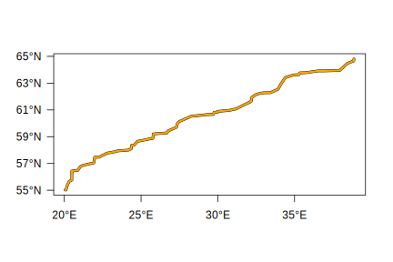
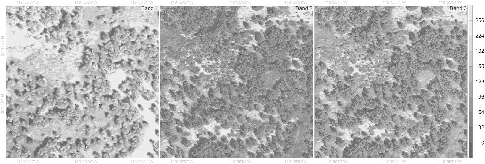
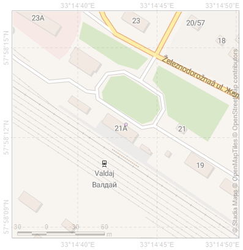
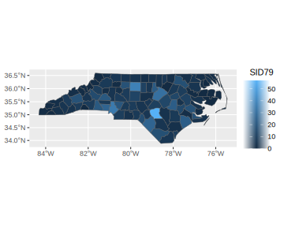
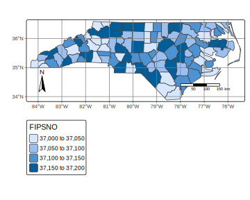
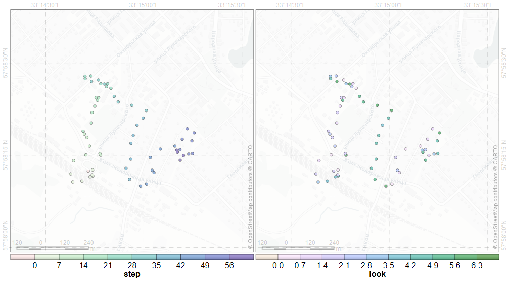

layout: true .toc.banner[ .shorttitle[ [WebR](https://webr.r-wasm.org/latest/) [Online Code Editor](https://rdrr.io/snippets/) [ГИС аспирантура](break.html#home) ] ] --- name: home class: metadata customtitle middle left giphy .toc.sidebar.left-column[ .outline[ ## [Основы R ](#Hd4f16) ## [R как ГИС?](#rgis) ## [Пространственные данные ](#H2e47b) ## [Дополнительно по R ](#H4a3c9) ] ] .toc.mainbar.right-column.scrollable[ .authors[ .author[Никита Платонов] .institute[с.н.с. ИПЭЭ РАН] ] .title[ Возможности R для работы с пространственными данными ] .subtitle[ ГИС технологии в биологических исследованиях ] .what[ Занятие 05 ] .where[ ] .when[ .updated[Обновлено: 2025-03-05 11:33] ] ] --- name: Hd4f16 .toc.sidebar.left-column[ .outline[ ## [Основы R ](#Hd4f16).fg[] ### [Установка R ](#Hd4f16).fg[] #### [Как использовать данный материал ](#Hd4f16).fg[].bg[] #### [Oперационные системы ](#Ha3b91) #### [Базовый R ](#Hadeed) #### [Библиотеки ](#He464f) #### [Дополнительное ПО ](#H9c04c) ### [Начало работы ](#H8e057) ### [Представление данных ](#Hc304d) ## [R как ГИС?](#rgis) ## [Пространственные данные ](#H2e47b) ## [Дополнительно по R ](#H4a3c9) ] ] .toc.mainbar.right-column.scrollable[ .header.h4.broad[ Как использовать данный материал .parent[.grand[Установка R .grand[Основы R]]] ] .fixprecode[ Предполагается, что во время занятий будет использоваться интерактивный режим: либо простая среда R (R, запущенный без команд), либо графическая среда R GUI, либо RStudio. Блок исходного кода выделен моноширинным шрифтом с подсветкой синтаксиса, после которого либо приведен текстовый вывод (более бледный цвет шрифта), либо графический вывод (рисунок, таблица). В среде R нужно вводить код из верхнего блока и сравнивать полученный вывод с содержимым нижнего блока. К примеру, ниже приведен пример вывода числа `\(\pi\)`: сверху – команда, снизу – выход. ``` r pi ``` ``` [1] 3.141593 ``` ] ] --- name: Ha3b91 .toc.sidebar.left-column[ .outline[ ## [Основы R ](#Hd4f16).fg[] ### [Установка R ](#Hd4f16).fg[] #### [Как использовать данный материал ](#Hd4f16) #### [Oперационные системы ](#Ha3b91).fg[].bg[] #### [Базовый R ](#Hadeed) #### [Библиотеки ](#He464f) #### [Дополнительное ПО ](#H9c04c) ### [Начало работы ](#H8e057) ### [Представление данных ](#Hc304d) ## [R как ГИС?](#rgis) ## [Пространственные данные ](#H2e47b) ## [Дополнительно по R ](#H4a3c9) ] ] .toc.mainbar.right-column.scrollable[ .header.h4.broad[ Oперационные системы .parent[.grand[Установка R .grand[Основы R]]] ] .fixprecode[ Не для всех операционных систем есть скомпилированные модули (ядро R, библиотеки). В таком случае модули компилируются, и на это уходит какое-то время. Поэтому если ОС не OS Windows, то этот этап нужно пройти заранее. ] ] --- name: Hadeed .toc.sidebar.left-column[ .outline[ ## [Основы R ](#Hd4f16).fg[] ### [Установка R ](#Hd4f16).fg[] #### [Как использовать данный материал ](#Hd4f16) #### [Oперационные системы ](#Ha3b91) #### [Базовый R ](#Hadeed).fg[].bg[] #### [Библиотеки ](#He464f) #### [Дополнительное ПО ](#H9c04c) ### [Начало работы ](#H8e057) ### [Представление данных ](#Hc304d) ## [R как ГИС?](#rgis) ## [Пространственные данные ](#H2e47b) ## [Дополнительно по R ](#H4a3c9) ] ] .toc.mainbar.right-column.scrollable[ .header.h4.broad[ Базовый R .parent[.grand[Установка R .grand[Основы R]]] ] .fixprecode[ Установить или обновить R, например, [отсюда](https://cran.rstudio.org/). По состоянию на 05 марта 2025 г. актуальная версия 4.4.2. Нативные пайпы с версии 4.1. Пакеты не обновляются для старых версий R. При переходе с версии 3.x на версию 4.x необходимость переустановки всех пакетов (библиотеки, модули). ] ] --- name: He464f .toc.sidebar.left-column[ .outline[ ## [Основы R ](#Hd4f16).fg[] ### [Установка R ](#Hd4f16).fg[] #### [Как использовать данный материал ](#Hd4f16) #### [Oперационные системы ](#Ha3b91) #### [Базовый R ](#Hadeed) #### [Библиотеки ](#He464f) <span class="bullet bullet-active">[•](#He464f)</span><span class="bullet mslide10m">[•](#Hc9837)</span>.fg[].bg[] #### [Дополнительное ПО ](#H9c04c) ### [Начало работы ](#H8e057) ### [Представление данных ](#Hc304d) ## [R как ГИС?](#rgis) ## [Пространственные данные ](#H2e47b) ## [Дополнительно по R ](#H4a3c9) ] ] .toc.mainbar.right-column.scrollable[ .header.h4.broad[ Библиотеки .parent[.grand[Установка R .grand[Основы R]]] ] .fixprecode[ .scrollable[ ``` r pkgList <- c("sf","terra","raster","ggplot2","leaflet","mapview" ,"mapedit","knitr","rmarkdown","gdalUtilities","tmap","ursa") whoisready <- sapply(pkgList,function(pkg) { if (requireNamespace(pkg)) return(TRUE) install.packages(pkg,repos="https://cran.rstudio.com") requireNamespace(pkg) }) ``` ``` Loading required namespace: sf ``` ``` Loading required namespace: terra ``` ``` Loading required namespace: raster ``` ``` Loading required namespace: ggplot2 ``` ``` Loading required namespace: leaflet ``` ``` Loading required namespace: mapview ``` ``` Loading required namespace: mapedit ``` ``` Loading required namespace: gdalUtilities ``` ``` Loading required namespace: tmap ``` ] ] ] --- name: Hc9837 .toc.sidebar.left-column[ .outline[ ## [Основы R ](#Hd4f16).fg[] ### [Установка R ](#Hd4f16).fg[] #### [Как использовать данный материал ](#Hd4f16) #### [Oперационные системы ](#Ha3b91) #### [Базовый R ](#Hadeed) #### [Библиотеки ](#He464f) <span class="bullet bullet">[•](#He464f)</span><span class="bullet bullet-active">[•](#Hc9837)</span>.fg[].bg[] #### [Дополнительное ПО ](#H9c04c) ### [Начало работы ](#H8e057) ### [Представление данных ](#Hc304d) ## [R как ГИС?](#rgis) ## [Пространственные данные ](#H2e47b) ## [Дополнительно по R ](#H4a3c9) ] ] .toc.mainbar.right-column.scrollable[ .header.h4.broad[ Библиотеки .parent[.grand[Установка R .grand[Основы R]]] ] .fixprecode[ ``` r whoisready ``` ``` sf terra raster ggplot2 leaflet TRUE TRUE TRUE TRUE TRUE mapview mapedit knitr rmarkdown gdalUtilities TRUE TRUE TRUE TRUE TRUE tmap ursa TRUE TRUE ``` Если отображается `TRUE` для всех библиотек, то подготовка к занятию осуществлена успешно. ``` r c('Everything is ready?'=all(whoisready)) ``` ``` Everything is ready? TRUE ``` Если где-то выскочило `FALSE` (например, для библиотеки "foo"), то можно попробовать его установить заново функцией `install.packages("foo")`. ] ] --- class: middle center name: H9c04c .toc.sidebar.left-column[ .outline[ ## [Основы R ](#Hd4f16).fg[] ### [Установка R ](#Hd4f16).fg[] #### [Как использовать данный материал ](#Hd4f16) #### [Oперационные системы ](#Ha3b91) #### [Базовый R ](#Hadeed) #### [Библиотеки ](#He464f) #### [Дополнительное ПО ](#H9c04c).fg[] ##### [RStudio IDE](#H9c04c).fg[].bg[] ##### [Pandoc](#pandoc) ##### [Jupyter ](#H12f7e) ### [Начало работы ](#H8e057) ### [Представление данных ](#Hc304d) ## [R как ГИС?](#rgis) ## [Пространственные данные ](#H2e47b) ## [Дополнительно по R ](#H4a3c9) ] ] .toc.mainbar.right-column.scrollable[ .header.h5.broad[ RStudio IDE .parent[.grand[Дополнительное ПО .grand[Установка R] .grand[Основы R]]] ] .fixprecode[ <sup>факультативно</sup> ] ] --- name: pandoc .toc.sidebar.left-column[ .outline[ ## [Основы R ](#Hd4f16).fg[] ### [Установка R ](#Hd4f16).fg[] #### [Как использовать данный материал ](#Hd4f16) #### [Oперационные системы ](#Ha3b91) #### [Базовый R ](#Hadeed) #### [Библиотеки ](#He464f) #### [Дополнительное ПО ](#H9c04c).fg[] ##### [RStudio IDE](#H9c04c) ##### [Pandoc](#pandoc).fg[].bg[] ##### [Jupyter ](#H12f7e) ### [Начало работы ](#H8e057) ### [Представление данных ](#Hc304d) ## [R как ГИС?](#rgis) ## [Пространственные данные ](#H2e47b) ## [Дополнительно по R ](#H4a3c9) ] ] .toc.mainbar.right-column.scrollable[ .header.h5.broad[ Pandoc .parent[.grand[Дополнительное ПО .grand[Установка R] .grand[Основы R]]] ] .fixprecode[ .font90[ Pandoc необходим для создания воспроизводимого результата. Этот шаг опциональный, и может быть пропущен, но в этом случае на занятии будет пропущен раздел по [публикации результатов](#report1). [Ссылка](https://pandoc.org/installing.html) на страницу для скачивания. Для пользователей Windows достаточно перейти к [скачиванию актуального релиза](https://github.com/jgm/pandoc/releases/latest), и выбрать либо установщик (`*.msi`), либо архив (`*.zip`). Запомнить путь, куда произведена установка и где находится файл `pandoc.exe` и добавить этот путь в переменную окружения `%PATH%`, например: WindowsKey+Q, ввести "Переменные среды/Environment Variables", попасть в окошко "Свойства Системы/System Properties", нажать на кнопку "Переменные среды/Environment Variables" и отредактировать пользовательскую или системную переменную PATH, добавив путь к `pandoc.exe`. Чтобы проверить правильно ли установлен Pandoc, в новой R-сессии: ``` r rmarkdown::pandoc_available() ``` ``` [1] TRUE ``` ] ] ] --- name: H12f7e .toc.sidebar.left-column[ .outline[ ## [Основы R ](#Hd4f16).fg[] ### [Установка R ](#Hd4f16).fg[] #### [Как использовать данный материал ](#Hd4f16) #### [Oперационные системы ](#Ha3b91) #### [Базовый R ](#Hadeed) #### [Библиотеки ](#He464f) #### [Дополнительное ПО ](#H9c04c).fg[] ##### [RStudio IDE](#H9c04c) ##### [Pandoc](#pandoc) ##### [Jupyter ](#H12f7e).fg[].bg[] ### [Начало работы ](#H8e057) ### [Представление данных ](#Hc304d) ## [R как ГИС?](#rgis) ## [Пространственные данные ](#H2e47b) ## [Дополнительно по R ](#H4a3c9) ] ] .toc.mainbar.right-column.scrollable[ .header.h5.broad[ Jupyter .parent[.grand[Дополнительное ПО .grand[Установка R] .grand[Основы R]]] ] .fixprecode[ Jupyter Notebook для работы с R кодом в браузере. 1. [Загрузить](https://docs.conda.io/en/latest/miniconda.html) и установить менеджер Miniconda (проверено на Windows 64bit Python 3.7). 2. Запустить `conda` (На Windows попробовать WinKey+Q и начать вводить "Anaconda") 3. Последовательно выполнить команды (в среде Conda, не в среде R): Команда | Описание ---|--- `conda install jupyter` | установка Jupyter Notebook `conda install -c r r-recommended r-irkernel` | Установка R, базовых библиотек и библиотеки для использования R в Jupyter Notebook `conda install -c conda-forge jupytext` | Установка преобразователя кода R в формат Jupyter Notebook ] ] --- name: H8e057 .toc.sidebar.left-column[ .outline[ ## [Основы R ](#Hd4f16).fg[] ### [Установка R ](#Hd4f16) ### [Начало работы ](#H8e057) <span class="bullet bullet-active">[•](#H8e057)</span><span class="bullet mslide16m">[•](#H20e0d)</span>.fg[].bg[] ### [Представление данных ](#Hc304d) ## [R как ГИС?](#rgis) ## [Пространственные данные ](#H2e47b) ## [Дополнительно по R ](#H4a3c9) ] ] .toc.mainbar.right-column.scrollable[ .header.h3.broad[ Начало работы .parent[.grand[Основы R]] ] .fixprecode[ Текущий путь, где мы находимся. Здесь появятся файлы, созданные в процессе занятия. ``` r getwd() ``` ``` [1] "C:/platt/education/sevinGIS" ``` Его можно поменять через меню RGui/RStudio или с помощью `setwd()`. Зафиксируем генератор псевдослучайных чисел на определенную последовательность ``` r set.seed(353) sample(10) ``` ``` [1] 2 7 10 6 4 1 3 9 5 8 ``` ] ] --- name: H20e0d .toc.sidebar.left-column[ .outline[ ## [Основы R ](#Hd4f16).fg[] ### [Установка R ](#Hd4f16) ### [Начало работы ](#H8e057) <span class="bullet bullet">[•](#H8e057)</span><span class="bullet bullet-active">[•](#H20e0d)</span>.fg[].bg[] ### [Представление данных ](#Hc304d) ## [R как ГИС?](#rgis) ## [Пространственные данные ](#H2e47b) ## [Дополнительно по R ](#H4a3c9) ] ] .toc.mainbar.right-column.scrollable[ .header.h3.broad[ Начало работы .parent[.grand[Основы R]] ] .fixprecode[ .zont90[ Команда для проверки кириллицы: ``` r print(c('Здесь кириллица?'="Да!"),quote=FALSE) ``` ``` Здесь кириллица? Да! ``` Если вывод не читаемый, то возможные пути решения: 1\. Задать кириллицу для символьной локали: ``` r if (.Platform$OS.type=="windows") Sys.setlocale("LC_CTYPE","Russian") ``` ``` Warning in Sys.setlocale("LC_CTYPE", "Russian"): using locale code page other than 65001 ("UTF-8") may cause problems ``` ``` r Sys.setlocale("LC_CTYPE","Russian.UTF-8") ``` 2\. Если скрипты подключаются через `source()`, то можно настроить запуск R через конфигурационные файлы. Например, скачать [.Rprofile](./.Rprofile), разместить в рабочей директории, перегрузить R. Файл имеет следующую структуру: local({ options(encoding="UTF-8") Sys.setlocale("LC_CTYPE","Russian") }) 3\. Если скрипт `bar.R` с кириллицей в кодировке UTF-8 запускается из командной строки, то использовать следующие параметры запуска. R --encoding UTF-8 -f bar.R ] ] ] --- name: Hc304d .toc.sidebar.left-column[ .outline[ ## [Основы R ](#Hd4f16).fg[] ### [Установка R ](#Hd4f16) ### [Начало работы ](#H8e057) ### [Представление данных ](#Hc304d).fg[] #### [Простые типы ](#Hc304d).fg[] ##### [Числа и имена значений ](#Hc304d).fg[].bg[] ##### [Целые числа, числа с плавающей точкой ](#H3ca3a) ##### [Логические значения, строки ](#H942fc) #### [Составные типы ](#H6633e) #### [Матрицы ](#Hb8e60) #### [Массивы ](#H42887) #### [Факторы ](#H86d41) #### [Индексация](#indices) ## [R как ГИС?](#rgis) ## [Пространственные данные ](#H2e47b) ## [Дополнительно по R ](#H4a3c9) ] ] .toc.mainbar.right-column.scrollable[ .header.h5.broad[ Числа и имена значений .parent[.grand[Простые типы .grand[Представление данных] .grand[Основы R]]] ] .fixprecode[ ``` r (a1 <- seq(7)) ``` ``` [1] 1 2 3 4 5 6 7 ``` ``` r str(a1) ``` ``` int [1:7] 1 2 3 4 5 6 7 ``` ``` r a2 <- a1 names(a2) <- format(Sys.Date()+a1-1,"%A") a2 ``` ``` Wednesday Thursday Friday Saturday Sunday Monday Tuesday 1 2 3 4 5 6 7 ``` ``` r str(a2) ``` ``` Named int [1:7] 1 2 3 4 5 6 7 - attr(*, "names")= chr [1:7] "Wednesday" "Thursday" "Friday" "Saturday" ... ``` ] ] --- name: H3ca3a .toc.sidebar.left-column[ .outline[ ## [Основы R ](#Hd4f16).fg[] ### [Установка R ](#Hd4f16) ### [Начало работы ](#H8e057) ### [Представление данных ](#Hc304d).fg[] #### [Простые типы ](#Hc304d).fg[] ##### [Числа и имена значений ](#Hc304d) ##### [Целые числа, числа с плавающей точкой ](#H3ca3a).fg[].bg[] ##### [Логические значения, строки ](#H942fc) #### [Составные типы ](#H6633e) #### [Матрицы ](#Hb8e60) #### [Массивы ](#H42887) #### [Факторы ](#H86d41) #### [Индексация](#indices) ## [R как ГИС?](#rgis) ## [Пространственные данные ](#H2e47b) ## [Дополнительно по R ](#H4a3c9) ] ] .toc.mainbar.right-column.scrollable[ .header.h5.broad[ Целые числа, числа с плавающей точкой .parent[.grand[Простые типы .grand[Представление данных] .grand[Основы R]]] ] .fixprecode[ ``` r str(a2+0L) ``` ``` Named int [1:7] 1 2 3 4 5 6 7 - attr(*, "names")= chr [1:7] "Wednesday" "Thursday" "Friday" "Saturday" ... ``` ``` r str(a2+0) ``` ``` Named num [1:7] 1 2 3 4 5 6 7 - attr(*, "names")= chr [1:7] "Wednesday" "Thursday" "Friday" "Saturday" ... ``` ``` r typeof(a2+0L) ``` ``` [1] "integer" ``` ``` r typeof(a2+0) ``` ``` [1] "double" ``` ] ] --- name: H942fc .toc.sidebar.left-column[ .outline[ ## [Основы R ](#Hd4f16).fg[] ### [Установка R ](#Hd4f16) ### [Начало работы ](#H8e057) ### [Представление данных ](#Hc304d).fg[] #### [Простые типы ](#Hc304d).fg[] ##### [Числа и имена значений ](#Hc304d) ##### [Целые числа, числа с плавающей точкой ](#H3ca3a) ##### [Логические значения, строки ](#H942fc).fg[].bg[] #### [Составные типы ](#H6633e) #### [Матрицы ](#Hb8e60) #### [Массивы ](#H42887) #### [Факторы ](#H86d41) #### [Индексация](#indices) ## [R как ГИС?](#rgis) ## [Пространственные данные ](#H2e47b) ## [Дополнительно по R ](#H4a3c9) ] ] .toc.mainbar.right-column.scrollable[ .header.h5.broad[ Логические значения, строки .parent[.grand[Простые типы .grand[Представление данных] .grand[Основы R]]] ] .fixprecode[ ##### Логические значения ``` r (a3 <- sample(c(TRUE,FALSE),length(a2),replace=TRUE)) ``` ``` [1] FALSE FALSE TRUE FALSE FALSE TRUE TRUE ``` ``` r class(a3) ``` ``` [1] "logical" ``` ``` r str(a3) ``` ``` logi [1:7] FALSE FALSE TRUE FALSE FALSE TRUE ... ``` ##### Строки ``` r (a4 <- names(a2)) ``` ``` [1] "Wednesday" "Thursday" "Friday" "Saturday" "Sunday" "Monday" [7] "Tuesday" ``` ``` r class(a4) ``` ``` [1] "character" ``` ``` r str(a4) ``` ``` chr [1:7] "Wednesday" "Thursday" "Friday" "Saturday" "Sunday" "Monday" ... ``` ] ] --- name: H6633e .toc.sidebar.left-column[ .outline[ ## [Основы R ](#Hd4f16).fg[] ### [Установка R ](#Hd4f16) ### [Начало работы ](#H8e057) ### [Представление данных ](#Hc304d).fg[] #### [Простые типы ](#Hc304d) #### [Составные типы ](#H6633e).fg[] ##### [Списки одинаковой длины ](#H6633e).fg[].bg[] ##### [Таблицы](#dataframe) ##### [Списки различной длины ](#H0c53e) #### [Матрицы ](#Hb8e60) #### [Массивы ](#H42887) #### [Факторы ](#H86d41) #### [Индексация](#indices) ## [R как ГИС?](#rgis) ## [Пространственные данные ](#H2e47b) ## [Дополнительно по R ](#H4a3c9) ] ] .toc.mainbar.right-column.scrollable[ .header.h5.broad[ Списки одинаковой длины .parent[.grand[Составные типы .grand[Представление данных] .grand[Основы R]]] ] .fixprecode[ ``` r (a5 <- list(num=a1[c(1,3:7)],char=a4[-2])) ``` ``` $num [1] 1 3 4 5 6 7 $char [1] "Wednesday" "Friday" "Saturday" "Sunday" "Monday" "Tuesday" ``` ``` r str(a5) ``` ``` List of 2 $ num : int [1:6] 1 3 4 5 6 7 $ char: chr [1:6] "Wednesday" "Friday" "Saturday" "Sunday" ... ``` ``` r class(a5) ``` ``` [1] "list" ``` ``` r length(a5) ``` ``` [1] 2 ``` ``` r sapply(a5,length) ``` ``` num char 6 6 ``` ] ] --- name: dataframe .toc.sidebar.left-column[ .outline[ ## [Основы R ](#Hd4f16).fg[] ### [Установка R ](#Hd4f16) ### [Начало работы ](#H8e057) ### [Представление данных ](#Hc304d).fg[] #### [Простые типы ](#Hc304d) #### [Составные типы ](#H6633e).fg[] ##### [Списки одинаковой длины ](#H6633e) ##### [Таблицы](#dataframe).fg[].bg[] ##### [Списки различной длины ](#H0c53e) #### [Матрицы ](#Hb8e60) #### [Массивы ](#H42887) #### [Факторы ](#H86d41) #### [Индексация](#indices) ## [R как ГИС?](#rgis) ## [Пространственные данные ](#H2e47b) ## [Дополнительно по R ](#H4a3c9) ] ] .toc.mainbar.right-column.scrollable[ .header.h5.broad[ Таблицы .parent[.grand[Составные типы .grand[Представление данных] .grand[Основы R]]] ] .fixprecode[ ``` r (a6 <- data.frame(num=a1[c(1,3:7)],char=a4[-2])) ``` ``` num char 1 1 Wednesday 2 3 Friday 3 4 Saturday 4 5 Sunday 5 6 Monday 6 7 Tuesday ``` ``` r str(a6) ``` ``` 'data.frame': 6 obs. of 2 variables: $ num : int 1 3 4 5 6 7 $ char: chr "Wednesday" "Friday" "Saturday" "Sunday" ... ``` ``` r class(a6) ``` ``` [1] "data.frame" ``` ``` r dim(a6) ``` ``` [1] 6 2 ``` См. [индексацию](#indices). ] ] --- name: H0c53e .toc.sidebar.left-column[ .outline[ ## [Основы R ](#Hd4f16).fg[] ### [Установка R ](#Hd4f16) ### [Начало работы ](#H8e057) ### [Представление данных ](#Hc304d).fg[] #### [Простые типы ](#Hc304d) #### [Составные типы ](#H6633e).fg[] ##### [Списки одинаковой длины ](#H6633e) ##### [Таблицы](#dataframe) ##### [Списки различной длины ](#H0c53e).fg[].bg[] #### [Матрицы ](#Hb8e60) #### [Массивы ](#H42887) #### [Факторы ](#H86d41) #### [Индексация](#indices) ## [R как ГИС?](#rgis) ## [Пространственные данные ](#H2e47b) ## [Дополнительно по R ](#H4a3c9) ] ] .toc.mainbar.right-column.scrollable[ .header.h5.broad[ Списки различной длины .parent[.grand[Составные типы .grand[Представление данных] .grand[Основы R]]] ] .fixprecode[ ``` r (a7 <- list(x=sample(a1,3),y=sample(a1,5))) ``` ``` $x [1] 7 2 3 $y [1] 7 3 2 4 6 ``` ``` r str(a7) ``` ``` List of 2 $ x: int [1:3] 7 2 3 $ y: int [1:5] 7 3 2 4 6 ``` ``` r class(a7) ``` ``` [1] "list" ``` ``` r length(a7) ``` ``` [1] 2 ``` ``` r sapply(a7,length) ``` ``` x y 3 5 ``` ] ] --- name: Hb8e60 .toc.sidebar.left-column[ .outline[ ## [Основы R ](#Hd4f16).fg[] ### [Установка R ](#Hd4f16) ### [Начало работы ](#H8e057) ### [Представление данных ](#Hc304d).fg[] #### [Простые типы ](#Hc304d) #### [Составные типы ](#H6633e) #### [Матрицы ](#Hb8e60).fg[].bg[] #### [Массивы ](#H42887) #### [Факторы ](#H86d41) #### [Индексация](#indices) ## [R как ГИС?](#rgis) ## [Пространственные данные ](#H2e47b) ## [Дополнительно по R ](#H4a3c9) ] ] .toc.mainbar.right-column.scrollable[ .header.h4.broad[ Матрицы .parent[.grand[Представление данных .grand[Основы R]]] ] .fixprecode[ ``` r (a11 <- matrix(sample(seq(24)),ncol=4,nrow=3)) ``` ``` Warning in matrix(sample(seq(24)), ncol = 4, nrow = 3): data length differs from size of matrix: [24 != 3 x 4] ``` ``` [,1] [,2] [,3] [,4] [1,] 20 24 6 17 [2,] 8 23 2 13 [3,] 22 1 21 10 ``` Размерность массива ``` r dim(a11) ``` ``` [1] 3 4 ``` Структура данных массива ``` r str(a11) ``` ``` int [1:3, 1:4] 20 8 22 24 23 1 6 2 21 17 ... ``` ] ] --- name: H42887 .toc.sidebar.left-column[ .outline[ ## [Основы R ](#Hd4f16).fg[] ### [Установка R ](#Hd4f16) ### [Начало работы ](#H8e057) ### [Представление данных ](#Hc304d).fg[] #### [Простые типы ](#Hc304d) #### [Составные типы ](#H6633e) #### [Матрицы ](#Hb8e60) #### [Массивы ](#H42887).fg[].bg[] #### [Факторы ](#H86d41) #### [Индексация](#indices) ## [R как ГИС?](#rgis) ## [Пространственные данные ](#H2e47b) ## [Дополнительно по R ](#H4a3c9) ] ] .toc.mainbar.right-column.scrollable[ .header.h4.broad[ Массивы .parent[.grand[Представление данных .grand[Основы R]]] ] .fixprecode[ ``` r (a8 <- array(sample(24),dim=c(3,4,2))) ``` ``` , , 1 [,1] [,2] [,3] [,4] [1,] 10 4 2 17 [2,] 9 5 16 19 [3,] 14 15 18 22 , , 2 [,1] [,2] [,3] [,4] [1,] 20 23 7 21 [2,] 11 6 13 12 [3,] 3 8 24 1 ``` ``` r str(a8) ``` ``` int [1:3, 1:4, 1:2] 10 9 14 4 5 15 2 16 18 17 ... ``` ``` r class(a8) ``` ``` [1] "array" ``` ] ] --- name: H86d41 .toc.sidebar.left-column[ .outline[ ## [Основы R ](#Hd4f16).fg[] ### [Установка R ](#Hd4f16) ### [Начало работы ](#H8e057) ### [Представление данных ](#Hc304d).fg[] #### [Простые типы ](#Hc304d) #### [Составные типы ](#H6633e) #### [Матрицы ](#Hb8e60) #### [Массивы ](#H42887) #### [Факторы ](#H86d41).fg[].bg[] #### [Индексация](#indices) ## [R как ГИС?](#rgis) ## [Пространственные данные ](#H2e47b) ## [Дополнительно по R ](#H4a3c9) ] ] .toc.mainbar.right-column.scrollable[ .header.h4.broad[ Факторы .parent[.grand[Представление данных .grand[Основы R]]] ] .fixprecode[ ``` r (a9 <- factor(sample(a4),levels=a4)) ``` ``` [1] Thursday Wednesday Friday Sunday Saturday Tuesday Monday Levels: Wednesday Thursday Friday Saturday Sunday Monday Tuesday ``` ``` r str(a9) ``` ``` Factor w/ 7 levels "Wednesday","Thursday",..: 2 1 3 5 4 7 6 ``` ``` r class(a9) ``` ``` [1] "factor" ``` ``` r (a10 <- factor(sample(a4),levels=a4,ordered=TRUE)) ``` ``` [1] Saturday Sunday Tuesday Wednesday Friday Monday Thursday 7 Levels: Wednesday < Thursday < Friday < Saturday < Sunday < ... < Tuesday ``` ``` r str(a10) ``` ``` Ord.factor w/ 7 levels "Wednesday"<"Thursday"<..: 4 5 7 1 3 6 2 ``` ``` r class(a10) ``` ``` [1] "ordered" "factor" ``` ] ] --- name: indices .toc.sidebar.left-column[ .outline[ ## [Основы R ](#Hd4f16).fg[] ### [Установка R ](#Hd4f16) ### [Начало работы ](#H8e057) ### [Представление данных ](#Hc304d).fg[] #### [Простые типы ](#Hc304d) #### [Составные типы ](#H6633e) #### [Матрицы ](#Hb8e60) #### [Массивы ](#H42887) #### [Факторы ](#H86d41) #### [Индексация](#indices).fg[].bg[] ## [R как ГИС?](#rgis) ## [Пространственные данные ](#H2e47b) ## [Дополнительно по R ](#H4a3c9) ] ] .toc.mainbar.right-column.scrollable[ .header.h4.broad[ Индексация .parent[.grand[Представление данных .grand[Основы R]]] ] .fixprecode[ .double[ На примере [`data.frame`](#dataframe) (таблицы атрибутов пространственных данных) ``` r a6 ``` ``` num char 1 1 Wednesday 2 3 Friday 3 4 Saturday 4 5 Sunday 5 6 Monday 6 7 Tuesday ``` Выбрать отдельные строки ``` r a6[5:6,] ``` ``` num char 5 6 Monday 6 7 Tuesday ``` Выбрать отдельные столбцы ``` r a6[,2,drop=FALSE] ``` ``` char 1 Wednesday 2 Friday 3 Saturday 4 Sunday 5 Monday 6 Tuesday ``` ``` r a6[[2]] ``` ``` [1] "Wednesday" "Friday" "Saturday" "Sunday" "Monday" "Tuesday" ``` Использовать фунцию `subset()` ``` r subset(a6,char %in% c("Hrus Hrus","Monday","Tuesday","Wednesday")) ``` ``` num char 1 1 Wednesday 5 6 Monday 6 7 Tuesday ``` ] ] ] --- name: rgis .toc.sidebar.left-column[ .outline[ ## [Основы R ](#Hd4f16) ## [R как ГИС?](#rgis).fg[].bg[] ### [Средства визуализации ](#H8be29) ### [Пространственные данные ](#H7cf34) ### [По форматам ](#H746f6) ## [Пространственные данные ](#H2e47b) ## [Дополнительно по R ](#H4a3c9) ] ] .toc.mainbar.right-column.scrollable[ .header.h2.broad[ R как ГИС? ] .fixprecode[ + R устроен так, что можно реализовать сложные структуры данных, со средствами их инспектирования, что вполне применимо для пространственных данных и их метаданных + В R есть инструменты для анализа данных + В R есть инструменты для визуализации + *Как особенность развития до текущего момента*: воспроизводимость реализована лучше интерактивности + В R уже многое сделано по манипуляции с пространственными данными: пользователю не обязательно быть разработчиком ] ] --- name: H8be29 .toc.sidebar.left-column[ .outline[ ## [Основы R ](#Hd4f16) ## [R как ГИС?](#rgis).fg[] ### [Средства визуализации ](#H8be29).fg[].bg[] #### [Пример путешествия мимо/через Спб ](#Hbf289) #### [`data(volcano)` ](#H34ab1) ### [Пространственные данные ](#H7cf34) ### [По форматам ](#H746f6) ## [Пространственные данные ](#H2e47b) ## [Дополнительно по R ](#H4a3c9) ] ] .toc.mainbar.right-column.scrollable[ .header.h3.broad[ Средства визуализации .parent[.grand[R как ГИС?]] ] .fixprecode[ Базовые средства R для визуализации (библиотека `graphics`) пространственных данных: + `points()` – отображение точек (геометрия POINT) + `lines()`, `segments()`, `contour()` – отображение линий (геометрия LINESTRING) + `polygon()`, `polypath()` – отображение полигонов (геометрия POLYGON) + `image()`, `rasterImage()` – растровые изображения + `text()`, `legend()` – аннотациии + `axis()`, `mtext()` – рамочное оформление ] ] --- name: Hbf289 .toc.sidebar.left-column[ .outline[ ## [Основы R ](#Hd4f16) ## [R как ГИС?](#rgis).fg[] ### [Средства визуализации ](#H8be29).fg[] #### [Пример путешествия мимо/через Спб ](#Hbf289) <span class="bullet bullet-active">[•](#Hbf289)</span><span class="bullet mslide36m">[•](#H12d6b)</span><span class="bullet mslide37m">[•](#H65d18)</span>.fg[].bg[] #### [`data(volcano)` ](#H34ab1) ### [Пространственные данные ](#H7cf34) ### [По форматам ](#H746f6) ## [Пространственные данные ](#H2e47b) ## [Дополнительно по R ](#H4a3c9) ] ] .toc.mainbar.right-column.scrollable[ .header.h4.broad[ Пример путешествия мимо/через Спб .parent[.grand[Средства визуализации .grand[R как ГИС?]]] ] .fixprecode[ ``` r n <- 60 seqx <- seq(20,40,by=5) seqy <- seq(55,65,by=2) x <- sort(runif(n,min=min(seqx),max=max(seqx))) y <- sort(runif(n,min=min(seqy),max=max(seqy))) ``` ] ] --- name: H12d6b .toc.sidebar.left-column[ .outline[ ## [Основы R ](#Hd4f16) ## [R как ГИС?](#rgis).fg[] ### [Средства визуализации ](#H8be29).fg[] #### [Пример путешествия мимо/через Спб ](#Hbf289) <span class="bullet bullet">[•](#Hbf289)</span><span class="bullet bullet-active">[•](#H12d6b)</span><span class="bullet mslide37m">[•](#H65d18)</span>.fg[].bg[] #### [`data(volcano)` ](#H34ab1) ### [Пространственные данные ](#H7cf34) ### [По форматам ](#H746f6) ## [Пространственные данные ](#H2e47b) ## [Дополнительно по R ](#H4a3c9) ] ] .toc.mainbar.right-column.scrollable[ .header.h4.broad[ Пример путешествия мимо/через Спб .parent[.grand[Средства визуализации .grand[R как ГИС?]]] ] .fixprecode[ ``` r plot(x,y,type="n",asp=NA,axes=FALSE,xlab="",ylab="") lines(x,y,lwd=4,col="black") lines(x,y,lwd=3,col="orange") box() axis(1,at=seqx,lab=paste0(seqx,"°E"),lwd=0,lwd.ticks=1,las=1) axis(2,at=seqy,lab=paste0(seqy,"°N"),lwd=0,lwd.ticks=1,las=1) ```  ] ] --- name: H65d18 .toc.sidebar.left-column[ .outline[ ## [Основы R ](#Hd4f16) ## [R как ГИС?](#rgis).fg[] ### [Средства визуализации ](#H8be29).fg[] #### [Пример путешествия мимо/через Спб ](#Hbf289) <span class="bullet bullet">[•](#Hbf289)</span><span class="bullet bullet">[•](#H12d6b)</span><span class="bullet bullet-active">[•](#H65d18)</span>.fg[].bg[] #### [`data(volcano)` ](#H34ab1) ### [Пространственные данные ](#H7cf34) ### [По форматам ](#H746f6) ## [Пространственные данные ](#H2e47b) ## [Дополнительно по R ](#H4a3c9) ] ] .toc.mainbar.right-column.scrollable[ .header.h4.broad[ Пример путешествия мимо/через Спб .parent[.grand[Средства визуализации .grand[R как ГИС?]]] ] .fixprecode[ ``` r e <- sf::st_sfc(sf::st_linestring(cbind(x,y)),crs=4326) ursa::session_grid(NULL) ursa::glance(e,blank="white",coast.fill="#00000010",pointsize=12 ,col="black",plot.lwd=5) ``` <img src="assets/lesson05//ursa01_spb2.png" width="1330" height="500" style="display: block; margin: auto auto auto 0;" /> ] ] --- name: H34ab1 .toc.sidebar.left-column[ .outline[ ## [Основы R ](#Hd4f16) ## [R как ГИС?](#rgis).fg[] ### [Средства визуализации ](#H8be29).fg[] #### [Пример путешествия мимо/через Спб ](#Hbf289) #### [`data(volcano)` ](#H34ab1) <span class="bullet bullet-active">[•](#H34ab1)</span><span class="bullet mslide40m">[•](#Hb4f48)</span>.fg[].bg[] ### [Пространственные данные ](#H7cf34) ### [По форматам ](#H746f6) ## [Пространственные данные ](#H2e47b) ## [Дополнительно по R ](#H4a3c9) ] ] .toc.mainbar.right-column.scrollable[ .header.h4.broad[ `data(volcano)` .parent[.grand[Средства визуализации .grand[R как ГИС?]]] ] .fixprecode[ ``` r image(volcano) ``` <img src="assets/lesson05/imgvolcano-1.svg" width="1330" height="700" style="display: block; margin: auto auto auto 0;" /> ] ] --- name: Hb4f48 .toc.sidebar.left-column[ .outline[ ## [Основы R ](#Hd4f16) ## [R как ГИС?](#rgis).fg[] ### [Средства визуализации ](#H8be29).fg[] #### [Пример путешествия мимо/через Спб ](#Hbf289) #### [`data(volcano)` ](#H34ab1) <span class="bullet bullet">[•](#H34ab1)</span><span class="bullet bullet-active">[•](#Hb4f48)</span>.fg[].bg[] ### [Пространственные данные ](#H7cf34) ### [По форматам ](#H746f6) ## [Пространственные данные ](#H2e47b) ## [Дополнительно по R ](#H4a3c9) ] ] .toc.mainbar.right-column.scrollable[ .header.h4.broad[ `data(volcano)` .parent[.grand[Средства визуализации .grand[R как ГИС?]]] ] .fixprecode[ Это вулкан Maunga Whau (Mt Eden). ``` r ursa::glance("Mount Eden",place="park",style="Esri.WorldImagery") ``` <img src="assets/lesson05//ursa03_glancevolcano.png" width="1330" height="550" style="display: block; margin: auto auto auto 0;" /> ] ] --- name: H7cf34 .toc.sidebar.left-column[ .outline[ ## [Основы R ](#Hd4f16) ## [R как ГИС?](#rgis).fg[] ### [Средства визуализации ](#H8be29) ### [Пространственные данные ](#H7cf34).fg[] #### [Векторы ](#H7cf34).fg[].bg[] #### [Растры ](#H74b7f) #### [Визуализация ](#H94230) ### [По форматам ](#H746f6) ## [Пространственные данные ](#H2e47b) ## [Дополнительно по R ](#H4a3c9) ] ] .toc.mainbar.right-column.scrollable[ .header.h4.broad[ Векторы .parent[.grand[Пространственные данные .grand[R как ГИС?]]] ] .fixprecode[ .within[ Библиотека | Формат | Импорт | Экспорт -----|------|-----|--- [`sp`](https://edzer.github.io/sp/) | [GDAL vector drivers](https://gdal.org/drivers/vector/index.html) | `sf::st_read() ǀ> sf::as_Spatial()` <sup>1</sup> | `sf::st_as_sf() ǀ> sf::st_write()` <sup>2</sup> [`sf`](https://r-spatial.github.io/sf/) | [GDAL vector drivers](https://gdal.org/drivers/vector/index.html) | `st_read()` | `st_write()` [`gdalUtilities`](https://cran.rstudio.com/web/packages/gdalUtilities/) <sup>*факультативно*<sup> | [GDAL vector drivers](https://gdal.org/drivers/vector/index.html) | | оболочка системного GDAL <sup>1</sup>: `ursa::spatial_read(fname,engine="sp")` <br> **`rgdal`**`::readOGR()` <sup>2</sup>: `ursa::spatial_write(obj,fname)` <br> **`rgdal`**`::writeOGR()` ] ] ] --- name: H74b7f .toc.sidebar.left-column[ .outline[ ## [Основы R ](#Hd4f16) ## [R как ГИС?](#rgis).fg[] ### [Средства визуализации ](#H8be29) ### [Пространственные данные ](#H7cf34).fg[] #### [Векторы ](#H7cf34) #### [Растры ](#H74b7f).fg[].bg[] #### [Визуализация ](#H94230) ### [По форматам ](#H746f6) ## [Пространственные данные ](#H2e47b) ## [Дополнительно по R ](#H4a3c9) ] ] .toc.mainbar.right-column.scrollable[ .header.h4.broad[ Растры .parent[.grand[Пространственные данные .grand[R как ГИС?]]] ] .fixprecode[ .within[ Библиотека | Формат | Импорт | Экспорт ---|----|--------|---- [`sp`](https://cran.rstudio.com/web/packages/sp/) | [GDAL raster drivers](https://gdal.org/drivers/raster/index.html) | `raster::raster() ǀ> as("SpatialGridDataFrame")` <sup>1</sup> | `ursa::as_ursa(b) ǀ> ursa::as.Raster() ǀ> raster::writeRaster()` <sup>2</sup> [`raster`](https://cran.rstudio.com/web/packages/raster/) | [RRASTER – R Raster](https://gdal.org/drivers/raster/rraster.html), [GDAL raster drivers](https://gdal.org/drivers/raster/index.html) | `raster()`, `brick()`, `stack()` | `writeRaster()` [`terra`](https://cran.rstudio.com/web/packages/terra/) | [GDAL raster drivers](https://gdal.org/drivers/raster/index.html) | `rast()` | `writeRaster()` [`stars`](https://cran.rstudio.com/web/packages/stars/) | [GDAL raster drivers](https://gdal.org/drivers/raster/index.html) | `read_stars()` | `write_stars()` [`ncdf4`](https://cran.rstudio.com/web/packages/ncdf4/) | [NetCDF](https://gdal.org/drivers/raster/netcdf.html) | `nc_open()` | `nc_create()` [`ursa`](https://cran.rstudio.com/web/packages/ursa/) | [ENVI - ENVI .hdr Labelled Raster](https://gdal.org/drivers/raster/envi.html) | `read_envi()` | `write_envi()` <sup>1</sup>: **`rgdal`**`::readGDAL()` <sup>2</sup>: **`rgdal`**`::writeGDAL()` ] ] ] --- name: H94230 .toc.sidebar.left-column[ .outline[ ## [Основы R ](#Hd4f16) ## [R как ГИС?](#rgis).fg[] ### [Средства визуализации ](#H8be29) ### [Пространственные данные ](#H7cf34).fg[] #### [Векторы ](#H7cf34) #### [Растры ](#H74b7f) #### [Визуализация ](#H94230).fg[].bg[] ### [По форматам ](#H746f6) ## [Пространственные данные ](#H2e47b) ## [Дополнительно по R ](#H4a3c9) ] ] .toc.mainbar.right-column.scrollable[ .header.h4.broad[ Визуализация .parent[.grand[Пространственные данные .grand[R как ГИС?]]] ] .fixprecode[ Статическая, экспортируемая в обычные форматы изображений. PNG, JPG поддерживают DPI. + `ggplot2` и надстройки (префикс `gg*`) + `ursa` Интерактивная, отображаемая в браузере + `leaflet` + `mapview` + `tmap` ] ] --- name: H746f6 .toc.sidebar.left-column[ .outline[ ## [Основы R ](#Hd4f16) ## [R как ГИС?](#rgis).fg[] ### [Средства визуализации ](#H8be29) ### [Пространственные данные ](#H7cf34) ### [По форматам ](#H746f6).fg[] #### [Растры ](#H746f6).fg[].bg[] #### [Векторы ](#Hde875) #### [<code>sf</code> или <code>sp</code>? ](#Hced88) ## [Пространственные данные ](#H2e47b) ## [Дополнительно по R ](#H4a3c9) ] ] .toc.mainbar.right-column.scrollable[ .header.h4.broad[ Растры .parent[.grand[По форматам .grand[R как ГИС?]]] ] .fixprecode[ + Для хранения многослойные растров используется BSQ/BIL/BIP чередование слоев/строк/пикелей. Самый неэффективный - это BIP. При пространственно-временном анализе можно выбрать BIL, для большинства случаев - BSQ. + Целочисленный GeoTIFF быстро пишется и читается при использовании функций из библиотеки `rgdal` + [GeoTIFF](https://gdal.org/drivers/raster/gtiff.html) часто используется при обмене данными. ] ] --- name: Hde875 .toc.sidebar.left-column[ .outline[ ## [Основы R ](#Hd4f16) ## [R как ГИС?](#rgis).fg[] ### [Средства визуализации ](#H8be29) ### [Пространственные данные ](#H7cf34) ### [По форматам ](#H746f6).fg[] #### [Растры ](#H746f6) #### [Векторы ](#Hde875).fg[].bg[] #### [<code>sf</code> или <code>sp</code>? ](#Hced88) ## [Пространственные данные ](#H2e47b) ## [Дополнительно по R ](#H4a3c9) ] ] .toc.mainbar.right-column.scrollable[ .header.h4.broad[ Векторы .parent[.grand[По форматам .grand[R как ГИС?]]] ] .fixprecode[ + Хорошую скорость чтения и записи демонстрирует формат ["SQLite"](https://gdal.org/drivers/vector/sqlite.html) ("SpatiaLite" RDBMS) при использовании библиотеки `sf`. + ["GeoJSON"](https://gdal.org/drivers/vector/geojson.html) не очень быстрый, но можно использовать библиотеку [`geojsonsf`](https://cran.rstudio.com/web/packages/geojsonsf/). + При записи использовать опции, предусмотренные для выбранного формата данных + При записи ["ESRI Shapefile"](https://gdal.org/drivers/vector/shapefile.html) обращать внимания на *.prj, так как у QGIS и ESRI-продуктов разные восприятия файлов проекций. + "ESRI Shapefile" преобладающий формат при обмене данными. ] ] --- name: Hced88 .toc.sidebar.left-column[ .outline[ ## [Основы R ](#Hd4f16) ## [R как ГИС?](#rgis).fg[] ### [Средства визуализации ](#H8be29) ### [Пространственные данные ](#H7cf34) ### [По форматам ](#H746f6).fg[] #### [Растры ](#H746f6) #### [Векторы ](#Hde875) #### [<code>sf</code> или <code>sp</code>? ](#Hced88).fg[].bg[] ## [Пространственные данные ](#H2e47b) ## [Дополнительно по R ](#H4a3c9) ] ] .toc.mainbar.right-column.scrollable[ .header.h4.broad[ <code>sf</code> или <code>sp</code>? .parent[.grand[По форматам .grand[R как ГИС?]]] ] .fixprecode[ + В пользу .large[`sf`] больше аргументов: + удобнее, развивается, поддерживается + в `sf` объекты класса S3, в `sp` объекты класса S4 (строже, но медленнее) + есть `sf::as_Spatial()` (или `as(...,"Spatial")`) для преобразования в объекты `sp`. Обратное преобразование: `sf::st_as_sf()`. + Эффективность с геометрией POINT выше у `sp` из-за представления атрибутивной таблицы и геометрии в одной таблице. + Ряд библиотек завязаны на формат данных `sp`, например [`adehabitatHR`](https://cran.rstudio.com/web/packages/adehabitatHR/), [`dismo`](https://cran.rstudio.com/web/packages/dismo/), [`sdm`](https://cran.rstudio.com/web/packages/sdm/). ] ] --- class: middle name: H2e47b .toc.sidebar.left-column[ .outline[ ## [Основы R ](#Hd4f16) ## [R как ГИС?](#rgis) ## [Пространственные данные ](#H2e47b).fg[] ### [Импорт](#H2e47b).fg[].bg[] #### [Источники для примера ](#H0119b) #### [Векторные данные ](#Hfa01b) #### [Растровые данные ](#H028db) ### [Характеристики](#H474e7) ### [Создание](#Hf2931) ### [Визуализация ](#H3acdd) ### [Экспорт](#H75675) ### [Рисование ](#Hd5e89) ## [Дополнительно по R ](#H4a3c9) ] ] .toc.mainbar.right-column.scrollable[ .header.h3.broad[ Импорт .parent[.grand[Пространственные данные]] ] .fixprecode[ Загрузить пространственные данные из файла ] ] --- name: H0119b .toc.sidebar.left-column[ .outline[ ## [Основы R ](#Hd4f16) ## [R как ГИС?](#rgis) ## [Пространственные данные ](#H2e47b).fg[] ### [Импорт](#H2e47b).fg[] #### [Источники для примера ](#H0119b) <span class="bullet bullet-active">[•](#H0119b)</span><span class="bullet mslide54m">[•](#Haa827)</span><span class="bullet mslide55m">[•](#Hdd854)</span><span class="bullet mslide56m">[•](#H448c1)</span>.fg[].bg[] #### [Векторные данные ](#Hfa01b) #### [Растровые данные ](#H028db) ### [Характеристики](#H474e7) ### [Создание](#Hf2931) ### [Визуализация ](#H3acdd) ### [Экспорт](#H75675) ### [Рисование ](#Hd5e89) ## [Дополнительно по R ](#H4a3c9) ] ] .toc.mainbar.right-column.scrollable[ .header.h4.broad[ Источники для примера .parent[.grand[Импорт .grand[Пространственные данные]]] ] .fixprecode[ ``` r (shpname <- system.file("shape","nc.shp",package="sf")) ``` ``` [1] "C:/Software/Rlibs4/sf/shape/nc.shp" ``` ``` r file.exists(shpname) ``` ``` [1] TRUE ``` ``` r (tifname <- system.file("extdata/tahoe.tif",package="gdalUtilities")) ``` ``` [1] "C:/Software/Rlibs4/gdalUtilities/extdata/tahoe.tif" ``` ``` r file.exists(tifname) ``` ``` [1] TRUE ``` ] ] --- name: Haa827 .toc.sidebar.left-column[ .outline[ ## [Основы R ](#Hd4f16) ## [R как ГИС?](#rgis) ## [Пространственные данные ](#H2e47b).fg[] ### [Импорт](#H2e47b).fg[] #### [Источники для примера ](#H0119b) <span class="bullet bullet">[•](#H0119b)</span><span class="bullet bullet-active">[•](#Haa827)</span><span class="bullet mslide55m">[•](#Hdd854)</span><span class="bullet mslide56m">[•](#H448c1)</span>.fg[].bg[] #### [Векторные данные ](#Hfa01b) #### [Растровые данные ](#H028db) ### [Характеристики](#H474e7) ### [Создание](#Hf2931) ### [Визуализация ](#H3acdd) ### [Экспорт](#H75675) ### [Рисование ](#Hd5e89) ## [Дополнительно по R ](#H4a3c9) ] ] .toc.mainbar.right-column.scrollable[ .header.h4.broad[ Источники для примера .parent[.grand[Импорт .grand[Пространственные данные]]] ] .fixprecode[ ``` r ursa::session_grid(NULL) ursa::glance(shpname,coast=FALSE,field="(NAME|SID79)",blank="white" ,legend=list(list(1,"left"),list(2,"left")),dpi=88) ``` <img src="assets/lesson05//ursa05_scotBNG.png" width="1330" height="566" bound style="display: block; margin: auto auto auto 0;" /> ] ] --- name: Hdd854 .toc.sidebar.left-column[ .outline[ ## [Основы R ](#Hd4f16) ## [R как ГИС?](#rgis) ## [Пространственные данные ](#H2e47b).fg[] ### [Импорт](#H2e47b).fg[] #### [Источники для примера ](#H0119b) <span class="bullet bullet">[•](#H0119b)</span><span class="bullet bullet">[•](#Haa827)</span><span class="bullet bullet-active">[•](#Hdd854)</span><span class="bullet mslide56m">[•](#H448c1)</span>.fg[].bg[] #### [Векторные данные ](#Hfa01b) #### [Растровые данные ](#H028db) ### [Характеристики](#H474e7) ### [Создание](#Hf2931) ### [Визуализация ](#H3acdd) ### [Экспорт](#H75675) ### [Рисование ](#Hd5e89) ## [Дополнительно по R ](#H4a3c9) ] ] .toc.mainbar.right-column.scrollable[ .header.h4.broad[ Источники для примера .parent[.grand[Импорт .grand[Пространственные данные]]] ] .fixprecode[ ``` r ursa::session_grid(NULL) ursa::glance(tifname,dpi=96) ``` <img src="assets/lesson05//ursa07_tahoe-rgb.png" width="1330" height="550" bound style="display: block; margin: auto auto auto 0;" /> ] ] --- name: H448c1 .toc.sidebar.left-column[ .outline[ ## [Основы R ](#Hd4f16) ## [R как ГИС?](#rgis) ## [Пространственные данные ](#H2e47b).fg[] ### [Импорт](#H2e47b).fg[] #### [Источники для примера ](#H0119b) <span class="bullet bullet">[•](#H0119b)</span><span class="bullet bullet">[•](#Haa827)</span><span class="bullet bullet">[•](#Hdd854)</span><span class="bullet bullet-active">[•](#H448c1)</span>.fg[].bg[] #### [Векторные данные ](#Hfa01b) #### [Растровые данные ](#H028db) ### [Характеристики](#H474e7) ### [Создание](#Hf2931) ### [Визуализация ](#H3acdd) ### [Экспорт](#H75675) ### [Рисование ](#Hd5e89) ## [Дополнительно по R ](#H4a3c9) ] ] .toc.mainbar.right-column.scrollable[ .header.h4.broad[ Источники для примера .parent[.grand[Импорт .grand[Пространственные данные]]] ] .fixprecode[ ``` r ursa::session_grid(NULL) ursa::display_brick(tifname,dpi=96) ```  ] ] --- name: Hfa01b .toc.sidebar.left-column[ .outline[ ## [Основы R ](#Hd4f16) ## [R как ГИС?](#rgis) ## [Пространственные данные ](#H2e47b).fg[] ### [Импорт](#H2e47b).fg[] #### [Источники для примера ](#H0119b) #### [Векторные данные ](#Hfa01b).fg[] ##### [<code>rgdal/sp</code> ](#Hfa01b) <span class="bullet bullet-active">[•](#Hfa01b)</span><span class="bullet mslide60m">[•](#H86c2e)</span><span class="bullet mslide61m">[•](#Hf1c5d)</span>.fg[].bg[] ##### [<code>sf</code>](#importExample) #### [Растровые данные ](#H028db) ### [Характеристики](#H474e7) ### [Создание](#Hf2931) ### [Визуализация ](#H3acdd) ### [Экспорт](#H75675) ### [Рисование ](#Hd5e89) ## [Дополнительно по R ](#H4a3c9) ] ] .toc.mainbar.right-column.scrollable[ .header.h5.broad[ <code>rgdal/sp</code> .parent[.grand[Векторные данные .grand[Импорт] .grand[Пространственные данные]]] ] .fixprecode[ .oversize.h650[ ``` r try(rgdal::ogrInfo(shpname)) ## Будет ошибка, если пакета 'rgdal' нет ``` ``` Please note that rgdal will be retired during October 2023, plan transition to sf/stars/terra functions using GDAL and PROJ at your earliest convenience. See https://r-spatial.org/r/2023/05/15/evolution4.html and https://github.com/r-spatial/evolution rgdal: version: 1.6-7, (SVN revision 1203) Geospatial Data Abstraction Library extensions to R successfully loaded Loaded GDAL runtime: GDAL 3.6.2, released 2023/01/02 Path to GDAL shared files: C:/Software/Rlibs4/rgdal/gdal GDAL does not use iconv for recoding strings. GDAL binary built with GEOS: TRUE Loaded PROJ runtime: Rel. 9.2.0, March 1st, 2023, [PJ_VERSION: 920] Path to PROJ shared files: C:/Software/Rlibs4/rgdal/proj PROJ CDN enabled: FALSE Linking to sp version:1.6-1 To mute warnings of possible GDAL/OSR exportToProj4() degradation, use options("rgdal_show_exportToProj4_warnings"="none") before loading sp or rgdal. ``` ``` Warning in rgdal::ogrInfo(shpname): OGR support is provided by the sf and terra packages among others ``` ``` Warning in ogrListLayers(dsn = dsn): OGR support is provided by the sf and terra packages among others ``` ``` Warning in ogrFIDs(dsn = dsn, layer = layer): OGR support is provided by the sf and terra packages among others ``` ``` Warning in OGRSpatialRef(dsn, layer, morphFromESRI = morphFromESRI, dumpSRS = dumpSRS, : OGR support is provided by the sf and terra packages among others ``` ``` Warning in ogrListLayers(dsn): OGR support is provided by the sf and terra packages among others ``` ``` Warning in print.ogrinfo(x): OGR support is provided by the sf and terra packages among others ``` ``` Source: "C:\Software\Rlibs4\sf\shape\nc.shp", layer: "nc" Driver: ESRI Shapefile; number of rows: 100 Feature type: wkbPolygon with 2 dimensions Extent: (-84.32385 33.88199) - (-75.45698 36.58965) CRS: +proj=longlat +datum=NAD27 +no_defs LDID: 87 Number of fields: 14 name type length typeName 1 AREA 2 24 Real 2 PERIMETER 2 24 Real 3 CNTY_ 2 24 Real 4 CNTY_ID 2 24 Real 5 NAME 4 80 String 6 FIPS 4 80 String 7 FIPSNO 2 24 Real 8 CRESS_ID 0 9 Integer 9 BIR74 2 24 Real 10 SID74 2 24 Real 11 NWBIR74 2 24 Real 12 BIR79 2 24 Real 13 SID79 2 24 Real 14 NWBIR79 2 24 Real ``` ] ] ] --- name: H86c2e .toc.sidebar.left-column[ .outline[ ## [Основы R ](#Hd4f16) ## [R как ГИС?](#rgis) ## [Пространственные данные ](#H2e47b).fg[] ### [Импорт](#H2e47b).fg[] #### [Источники для примера ](#H0119b) #### [Векторные данные ](#Hfa01b).fg[] ##### [<code>rgdal/sp</code> ](#Hfa01b) <span class="bullet bullet">[•](#Hfa01b)</span><span class="bullet bullet-active">[•](#H86c2e)</span><span class="bullet mslide61m">[•](#Hf1c5d)</span>.fg[].bg[] ##### [<code>sf</code>](#importExample) #### [Растровые данные ](#H028db) ### [Характеристики](#H474e7) ### [Создание](#Hf2931) ### [Визуализация ](#H3acdd) ### [Экспорт](#H75675) ### [Рисование ](#Hd5e89) ## [Дополнительно по R ](#H4a3c9) ] ] .toc.mainbar.right-column.scrollable[ .header.h5.broad[ <code>rgdal/sp</code> .parent[.grand[Векторные данные .grand[Импорт] .grand[Пространственные данные]]] ] .fixprecode[ ``` r b.sp <- sf::st_read(shpname) |> as("Spatial") ## rgdal::readOGR(shpname) ``` ``` Reading layer `nc' from data source `C:\Software\Rlibs4\sf\shape\nc.shp' using driver `ESRI Shapefile' Simple feature collection with 100 features and 14 fields Geometry type: MULTIPOLYGON Dimension: XY Bounding box: xmin: -84.32385 ymin: 33.88199 xmax: -75.45698 ymax: 36.58965 Geodetic CRS: NAD27 ``` ``` r class(b.sp) ``` ``` [1] "SpatialPolygonsDataFrame" attr(,"package") [1] "sp" ``` ``` r isS4(b.sp) ``` ``` [1] TRUE ``` ``` r slotNames(b.sp) ``` ``` [1] "data" "polygons" "plotOrder" "bbox" "proj4string" ``` ] ] --- name: Hf1c5d .toc.sidebar.left-column[ .outline[ ## [Основы R ](#Hd4f16) ## [R как ГИС?](#rgis) ## [Пространственные данные ](#H2e47b).fg[] ### [Импорт](#H2e47b).fg[] #### [Источники для примера ](#H0119b) #### [Векторные данные ](#Hfa01b).fg[] ##### [<code>rgdal/sp</code> ](#Hfa01b) <span class="bullet bullet">[•](#Hfa01b)</span><span class="bullet bullet">[•](#H86c2e)</span><span class="bullet bullet-active">[•](#Hf1c5d)</span>.fg[].bg[] ##### [<code>sf</code>](#importExample) #### [Растровые данные ](#H028db) ### [Характеристики](#H474e7) ### [Создание](#Hf2931) ### [Визуализация ](#H3acdd) ### [Экспорт](#H75675) ### [Рисование ](#Hd5e89) ## [Дополнительно по R ](#H4a3c9) ] ] .toc.mainbar.right-column.scrollable[ .header.h5.broad[ <code>rgdal/sp</code> .parent[.grand[Векторные данные .grand[Импорт] .grand[Пространственные данные]]] ] .fixprecode[ .oversize[ ``` r str(head(b.sp,2)) ``` ``` Formal class 'SpatialPolygonsDataFrame' [package "sp"] with 5 slots ..@ data :'data.frame': 2 obs. of 14 variables: .. ..$ AREA : num [1:2] 0.114 0.061 .. ..$ PERIMETER: num [1:2] 1.44 1.23 .. ..$ CNTY_ : num [1:2] 1825 1827 .. ..$ CNTY_ID : num [1:2] 1825 1827 .. ..$ NAME : chr [1:2] "Ashe" "Alleghany" .. ..$ FIPS : chr [1:2] "37009" "37005" .. ..$ FIPSNO : num [1:2] 37009 37005 .. ..$ CRESS_ID : int [1:2] 5 3 .. ..$ BIR74 : num [1:2] 1091 487 .. ..$ SID74 : num [1:2] 1 0 .. ..$ NWBIR74 : num [1:2] 10 10 .. ..$ BIR79 : num [1:2] 1364 542 .. ..$ SID79 : num [1:2] 0 3 .. ..$ NWBIR79 : num [1:2] 19 12 ..@ polygons :List of 2 .. ..$ :Formal class 'Polygons' [package "sp"] with 5 slots .. .. .. ..@ Polygons :List of 1 .. .. .. .. ..$ :Formal class 'Polygon' [package "sp"] with 5 slots .. .. .. .. .. .. ..@ labpt : num [1:2] -81.5 36.4 .. .. .. .. .. .. ..@ area : num 0.114 .. .. .. .. .. .. ..@ hole : logi FALSE .. .. .. .. .. .. ..@ ringDir: int 1 .. .. .. .. .. .. ..@ coords : num [1:27, 1:2] -81.5 -81.5 -81.6 -81.6 -81.7 ... .. .. .. ..@ plotOrder: int 1 .. .. .. ..@ labpt : num [1:2] -81.5 36.4 .. .. .. ..@ ID : chr "1" .. .. .. ..@ area : num 0.114 .. .. .. ..$ comment: chr "0" .. ..$ :Formal class 'Polygons' [package "sp"] with 5 slots .. .. .. ..@ Polygons :List of 1 .. .. .. .. ..$ :Formal class 'Polygon' [package "sp"] with 5 slots .. .. .. .. .. .. ..@ labpt : num [1:2] -81.1 36.5 .. .. .. .. .. .. ..@ area : num 0.0614 .. .. .. .. .. .. ..@ hole : logi FALSE .. .. .. .. .. .. ..@ ringDir: int 1 .. .. .. .. .. .. ..@ coords : num [1:26, 1:2] -81.2 -81.2 -81.3 -81.3 -81.3 ... .. .. .. ..@ plotOrder: int 1 .. .. .. ..@ labpt : num [1:2] -81.1 36.5 .. .. .. ..@ ID : chr "2" .. .. .. ..@ area : num 0.0614 .. .. .. ..$ comment: chr "0" ..@ plotOrder : int [1:2] 1 2 ..@ bbox : num [1:2, 1:2] -81.7 36.2 -80.9 36.6 .. ..- attr(*, "dimnames")=List of 2 .. .. ..$ : chr [1:2] "x" "y" .. .. ..$ : chr [1:2] "min" "max" ..@ proj4string:Formal class 'CRS' [package "sp"] with 1 slot .. .. ..@ projargs: chr "+proj=longlat +datum=NAD27 +no_defs" .. .. ..$ comment: chr "| __truncated__" ..$ comment: chr "TRUE" ``` ] ] ] --- name: importExample .toc.sidebar.left-column[ .outline[ ## [Основы R ](#Hd4f16) ## [R как ГИС?](#rgis) ## [Пространственные данные ](#H2e47b).fg[] ### [Импорт](#H2e47b).fg[] #### [Источники для примера ](#H0119b) #### [Векторные данные ](#Hfa01b).fg[] ##### [<code>rgdal/sp</code> ](#Hfa01b) ##### [<code>sf</code>](#importExample) <span class="bullet bullet-active">[•](#importExample)</span><span class="bullet mslide63m">[•](#H1fcbb)</span>.fg[].bg[] #### [Растровые данные ](#H028db) ### [Характеристики](#H474e7) ### [Создание](#Hf2931) ### [Визуализация ](#H3acdd) ### [Экспорт](#H75675) ### [Рисование ](#Hd5e89) ## [Дополнительно по R ](#H4a3c9) ] ] .toc.mainbar.right-column.scrollable[ .header.h5.broad[ <code>sf</code> .parent[.grand[Векторные данные .grand[Импорт] .grand[Пространственные данные]]] ] .fixprecode[ ``` r b.sf <- sf::st_read(shpname) ``` ``` Reading layer `nc' from data source `C:\Software\Rlibs4\sf\shape\nc.shp' using driver `ESRI Shapefile' Simple feature collection with 100 features and 14 fields Geometry type: MULTIPOLYGON Dimension: XY Bounding box: xmin: -84.32385 ymin: 33.88199 xmax: -75.45698 ymax: 36.58965 Geodetic CRS: NAD27 ``` ] ] --- name: H1fcbb .toc.sidebar.left-column[ .outline[ ## [Основы R ](#Hd4f16) ## [R как ГИС?](#rgis) ## [Пространственные данные ](#H2e47b).fg[] ### [Импорт](#H2e47b).fg[] #### [Источники для примера ](#H0119b) #### [Векторные данные ](#Hfa01b).fg[] ##### [<code>rgdal/sp</code> ](#Hfa01b) ##### [<code>sf</code>](#importExample) <span class="bullet bullet">[•](#importExample)</span><span class="bullet bullet-active">[•](#H1fcbb)</span>.fg[].bg[] #### [Растровые данные ](#H028db) ### [Характеристики](#H474e7) ### [Создание](#Hf2931) ### [Визуализация ](#H3acdd) ### [Экспорт](#H75675) ### [Рисование ](#Hd5e89) ## [Дополнительно по R ](#H4a3c9) ] ] .toc.mainbar.right-column.scrollable[ .header.h5.broad[ <code>sf</code> .parent[.grand[Векторные данные .grand[Импорт] .grand[Пространственные данные]]] ] .fixprecode[ ``` r str(b.sf) ``` ``` Classes 'sf' and 'data.frame': 100 obs. of 15 variables: $ AREA : num 0.114 0.061 0.143 0.07 0.153 0.097 0.062 0.091 0.118 0.124 ... $ PERIMETER: num 1.44 1.23 1.63 2.97 2.21 ... $ CNTY_ : num 1825 1827 1828 1831 1832 ... $ CNTY_ID : num 1825 1827 1828 1831 1832 ... $ NAME : chr "Ashe" "Alleghany" "Surry" "Currituck" ... $ FIPS : chr "37009" "37005" "37171" "37053" ... $ FIPSNO : num 37009 37005 37171 37053 37131 ... $ CRESS_ID : int 5 3 86 27 66 46 15 37 93 85 ... $ BIR74 : num 1091 487 3188 508 1421 ... $ SID74 : num 1 0 5 1 9 7 0 0 4 1 ... $ NWBIR74 : num 10 10 208 123 1066 ... $ BIR79 : num 1364 542 3616 830 1606 ... $ SID79 : num 0 3 6 2 3 5 2 2 2 5 ... $ NWBIR79 : num 19 12 260 145 1197 ... $ geometry :sfc_MULTIPOLYGON of length 100; first list element: List of 1 ..$ :List of 1 .. ..$ : num [1:27, 1:2] -81.5 -81.5 -81.6 -81.6 -81.7 ... ..- attr(*, "class")= chr [1:3] "XY" "MULTIPOLYGON" "sfg" - attr(*, "sf_column")= chr "geometry" - attr(*, "agr")= Factor w/ 3 levels "constant","aggregate",..: NA NA NA NA NA NA NA NA NA NA ... ..- attr(*, "names")= chr [1:14] "AREA" "PERIMETER" "CNTY_" "CNTY_ID" ... ``` ] ] --- name: H028db .toc.sidebar.left-column[ .outline[ ## [Основы R ](#Hd4f16) ## [R как ГИС?](#rgis) ## [Пространственные данные ](#H2e47b).fg[] ### [Импорт](#H2e47b).fg[] #### [Источники для примера ](#H0119b) #### [Векторные данные ](#Hfa01b) #### [Растровые данные ](#H028db).fg[] ##### [<code>rgdal/sp</code> ](#H028db) <span class="bullet bullet-active">[•](#H028db)</span><span class="bullet mslide66m">[•](#H6fa14)</span>.fg[].bg[] ##### [`raster` ](#H7b9e6) ##### [`terra` ](#Ha39c3) ### [Характеристики](#H474e7) ### [Создание](#Hf2931) ### [Визуализация ](#H3acdd) ### [Экспорт](#H75675) ### [Рисование ](#Hd5e89) ## [Дополнительно по R ](#H4a3c9) ] ] .toc.mainbar.right-column.scrollable[ .header.h5.broad[ <code>rgdal/sp</code> .parent[.grand[Растровые данные .grand[Импорт] .grand[Пространственные данные]]] ] .fixprecode[ .font92[ Получение данных напрямую ``` r # d1 <- terra::rast(tifname) |> as("SpatialGridDataFrame") ## Выскочит ошибка d1 <- raster::raster(tifname) |> as("SpatialGridDataFrame") ## rgdal::readGDAL(tifname) ``` ``` r str(d1) ``` ``` Formal class 'SpatialGridDataFrame' [package "sp"] with 4 slots ..@ data :'data.frame': 160000 obs. of 1 variable: .. ..$ tahoe_1: num [1:160000] 34 108 130 93 114 159 157 171 172 200 ... ..@ grid :Formal class 'GridTopology' [package "sp"] with 3 slots .. .. ..@ cellcentre.offset: Named num [1:2] -119.9 39.3 .. .. .. ..- attr(*, "names")= chr [1:2] "s1" "s2" .. .. ..@ cellsize : num [1:2] 5.47e-06 5.47e-06 .. .. ..@ cells.dim : int [1:2] 400 400 ..@ bbox : num [1:2, 1:2] -119.9 39.3 -119.9 39.3 .. ..- attr(*, "dimnames")=List of 2 .. .. ..$ : chr [1:2] "s1" "s2" .. .. ..$ : chr [1:2] "min" "max" ..@ proj4string:Formal class 'CRS' [package "sp"] with 1 slot .. .. ..@ projargs: chr "+proj=longlat +datum=WGS84 +no_defs" .. .. ..$ comment: chr "| __truncated__" ``` ``` r summary(d1@data[[1]]) ``` ``` Min. 1st Qu. Median Mean 3rd Qu. Max. 0 105 157 149 198 255 ``` ] ] ] --- name: H6fa14 .toc.sidebar.left-column[ .outline[ ## [Основы R ](#Hd4f16) ## [R как ГИС?](#rgis) ## [Пространственные данные ](#H2e47b).fg[] ### [Импорт](#H2e47b).fg[] #### [Источники для примера ](#H0119b) #### [Векторные данные ](#Hfa01b) #### [Растровые данные ](#H028db).fg[] ##### [<code>rgdal/sp</code> ](#H028db) <span class="bullet bullet">[•](#H028db)</span><span class="bullet bullet-active">[•](#H6fa14)</span>.fg[].bg[] ##### [`raster` ](#H7b9e6) ##### [`terra` ](#Ha39c3) ### [Характеристики](#H474e7) ### [Создание](#Hf2931) ### [Визуализация ](#H3acdd) ### [Экспорт](#H75675) ### [Рисование ](#Hd5e89) ## [Дополнительно по R ](#H4a3c9) ] ] .toc.mainbar.right-column.scrollable[ .header.h5.broad[ <code>rgdal/sp</code> .parent[.grand[Растровые данные .grand[Импорт] .grand[Пространственные данные]]] ] .fixprecode[ .font85[ Получение данных более гибким способом ``` r md <- try(rgdal::GDALinfo(tifname)) ``` ``` Warning in rgdal::GDALinfo(tifname): GDAL support is provided by the sf and terra packages among others ``` ``` Warning in getCPLConfigOption("OVERRIDE_PROJ_DATUM_WITH_TOWGS84"): GDAL support is provided by the sf and terra packages among others ``` ``` Warning in rgdal::GDALinfo(tifname): statistics not supported by this driver Warning in rgdal::GDALinfo(tifname): statistics not supported by this driver Warning in rgdal::GDALinfo(tifname): statistics not supported by this driver ``` ``` r if (!inherits(md,"try-error")) { mdname <- names(md) attributes(md) <- NULL names(md) <- mdname print(md) } ``` ``` rows columns bands ll.x ll.y 4.000000e+02 4.000000e+02 3.000000e+00 -1.199328e+02 3.928922e+01 res.x res.y oblique.x oblique.y 5.472861e-06 5.472861e-06 0.000000e+00 0.000000e+00 ``` ``` r if (!inherits(md,"try-error")) { dset <- methods::new("GDALReadOnlyDataset",tifname) d2 <- rgdal::getRasterData(dset,offset=c(0,0) ,region.dim=md[c("rows","columns")]) } ``` ``` r if (!inherits(md,"try-error")) str(d2) ``` ``` int [1:400, 1:400, 1:3] 34 108 130 93 114 159 157 171 172 200 ... ``` ``` r if (!inherits(md,"try-error")) summary(c(d2)) ``` ``` Min. 1st Qu. Median Mean 3rd Qu. Max. 0.0 61.0 104.0 110.4 159.0 255.0 ``` ] ] ] --- name: H7b9e6 .toc.sidebar.left-column[ .outline[ ## [Основы R ](#Hd4f16) ## [R как ГИС?](#rgis) ## [Пространственные данные ](#H2e47b).fg[] ### [Импорт](#H2e47b).fg[] #### [Источники для примера ](#H0119b) #### [Векторные данные ](#Hfa01b) #### [Растровые данные ](#H028db).fg[] ##### [<code>rgdal/sp</code> ](#H028db) ##### [`raster` ](#H7b9e6).fg[].bg[] ##### [`terra` ](#Ha39c3) ### [Характеристики](#H474e7) ### [Создание](#Hf2931) ### [Визуализация ](#H3acdd) ### [Экспорт](#H75675) ### [Рисование ](#Hd5e89) ## [Дополнительно по R ](#H4a3c9) ] ] .toc.mainbar.right-column.scrollable[ .header.h5.broad[ `raster` .parent[.grand[Растровые данные .grand[Импорт] .grand[Пространственные данные]]] ] .fixprecode[ ``` r (d3 <- raster::brick(tifname)) ``` ``` class : RasterBrick dimensions : 400, 400, 160000, 3 (nrow, ncol, ncell, nlayers) resolution : 5.472861e-06, 5.472861e-06 (x, y) extent : -119.9328, -119.9306, 39.28922, 39.29141 (xmin, xmax, ymin, ymax) crs : +proj=longlat +datum=WGS84 +no_defs source : tahoe.tif names : tahoe_1, tahoe_2, tahoe_3 ``` ``` r v3 <- d3[] ## 'd3[]' то же, что и 'raster::getValues(d3)' c(d3=object.size(d3),v3=object.size(v3)) ``` ``` d3 v3 13400 3840640 ``` ``` r str(v3) ``` ``` num [1:160000, 1:3] 34 108 130 93 114 159 157 171 172 200 ... - attr(*, "dimnames")=List of 2 ..$ : NULL ..$ : chr [1:3] "tahoe_1" "tahoe_2" "tahoe_3" ``` ``` r summary(c(v3)) ``` ``` Min. 1st Qu. Median Mean 3rd Qu. Max. 0.0 61.0 104.0 110.4 159.0 255.0 ``` ] ] --- name: Ha39c3 .toc.sidebar.left-column[ .outline[ ## [Основы R ](#Hd4f16) ## [R как ГИС?](#rgis) ## [Пространственные данные ](#H2e47b).fg[] ### [Импорт](#H2e47b).fg[] #### [Источники для примера ](#H0119b) #### [Векторные данные ](#Hfa01b) #### [Растровые данные ](#H028db).fg[] ##### [<code>rgdal/sp</code> ](#H028db) ##### [`raster` ](#H7b9e6) ##### [`terra` ](#Ha39c3).fg[].bg[] ### [Характеристики](#H474e7) ### [Создание](#Hf2931) ### [Визуализация ](#H3acdd) ### [Экспорт](#H75675) ### [Рисование ](#Hd5e89) ## [Дополнительно по R ](#H4a3c9) ] ] .toc.mainbar.right-column.scrollable[ .header.h5.broad[ `terra` .parent[.grand[Растровые данные .grand[Импорт] .grand[Пространственные данные]]] ] .fixprecode[ ``` r (d4 <- terra::rast(tifname)) ``` ``` class : SpatRaster dimensions : 400, 400, 3 (nrow, ncol, nlyr) resolution : 5.472861e-06, 5.472861e-06 (x, y) extent : -119.9328, -119.9306, 39.28922, 39.29141 (xmin, xmax, ymin, ymax) coord. ref. : lon/lat WGS 84 (EPSG:4326) source : tahoe.tif colors RGB : 1, 2, 3 names : tahoe_1, tahoe_2, tahoe_3 ``` ``` r v4 <- d4[] ## 'd4[]' то же, что и 'terra::values(d3)' c(d4=object.size(d4),v3=object.size(v4)) ``` ``` d4 v3 1304 1920640 ``` ``` r str(v4) ``` ``` int [1:160000, 1:3] 34 108 130 93 114 159 157 171 172 200 ... - attr(*, "dimnames")=List of 2 ..$ : NULL ..$ : chr [1:3] "tahoe_1" "tahoe_2" "tahoe_3" ``` ``` r summary(c(v4)) ``` ``` Min. 1st Qu. Median Mean 3rd Qu. Max. 0.0 61.0 104.0 110.4 159.0 255.0 ``` ] ] --- class: middle name: H474e7 .toc.sidebar.left-column[ .outline[ ## [Основы R ](#Hd4f16) ## [R как ГИС?](#rgis) ## [Пространственные данные ](#H2e47b).fg[] ### [Импорт](#H2e47b) ### [Характеристики](#H474e7).fg[].bg[] ### [Создание](#Hf2931) ### [Визуализация ](#H3acdd) ### [Экспорт](#H75675) ### [Рисование ](#Hd5e89) ## [Дополнительно по R ](#H4a3c9) ] ] .toc.mainbar.right-column.scrollable[ .header.h3.broad[ Характеристики .parent[.grand[Пространственные данные]] ] .fixprecode[ #### Характеристики, свойства и компоненты пространственных данных ] ] --- name: Hca358 .toc.sidebar.left-column[ .outline[ ## [Основы R ](#Hd4f16) ## [R как ГИС?](#rgis) ## [Пространственные данные ](#H2e47b).fg[] ### [Импорт](#H2e47b) ### [Характеристики](#H474e7).fg[] ##### [`sp` ](#Hca358).fg[].bg[] ##### [`sf` ](#Ha606b) #### [Таблица атрибутов ](#H4520a) #### [Геометрия ](#H28348) #### [Проекция](#H7da84) #### [Пространственный охват ](#H457ef) ### [Создание](#Hf2931) ### [Визуализация ](#H3acdd) ### [Экспорт](#H75675) ### [Рисование ](#Hd5e89) ## [Дополнительно по R ](#H4a3c9) ] ] .toc.mainbar.right-column.scrollable[ .header.h5.broad[ `sp` .parent[.grand[Растровые данные .grand[Характеристики] .grand[Пространственные данные]]] ] .fixprecode[ ``` r class(b.sp$NAME) ``` ``` [1] "character" ``` ``` r class(b.sp[["NAME"]]) ``` ``` [1] "character" ``` ``` r class(b.sp["NAME"]) ``` ``` [1] "SpatialPolygonsDataFrame" attr(,"package") [1] "sp" ``` ] ] --- name: Ha606b .toc.sidebar.left-column[ .outline[ ## [Основы R ](#Hd4f16) ## [R как ГИС?](#rgis) ## [Пространственные данные ](#H2e47b).fg[] ### [Импорт](#H2e47b) ### [Характеристики](#H474e7).fg[] ##### [`sp` ](#Hca358) ##### [`sf` ](#Ha606b).fg[].bg[] #### [Таблица атрибутов ](#H4520a) #### [Геометрия ](#H28348) #### [Проекция](#H7da84) #### [Пространственный охват ](#H457ef) ### [Создание](#Hf2931) ### [Визуализация ](#H3acdd) ### [Экспорт](#H75675) ### [Рисование ](#Hd5e89) ## [Дополнительно по R ](#H4a3c9) ] ] .toc.mainbar.right-column.scrollable[ .header.h5.broad[ `sf` .parent[.grand[Растровые данные .grand[Характеристики] .grand[Пространственные данные]]] ] .fixprecode[ ``` r class(b.sf$NAME) ``` ``` [1] "character" ``` ``` r class(b.sf[["NAME"]]) ``` ``` [1] "character" ``` ``` r class(b.sf["NAME"]) ``` ``` [1] "sf" "data.frame" ``` ] ] --- name: H4520a .toc.sidebar.left-column[ .outline[ ## [Основы R ](#Hd4f16) ## [R как ГИС?](#rgis) ## [Пространственные данные ](#H2e47b).fg[] ### [Импорт](#H2e47b) ### [Характеристики](#H474e7).fg[] #### [Таблица атрибутов ](#H4520a).fg[] ##### [`sp` ](#H4520a).fg[].bg[] ##### [`sf` ](#Hd1986) #### [Геометрия ](#H28348) #### [Проекция](#H7da84) #### [Пространственный охват ](#H457ef) ### [Создание](#Hf2931) ### [Визуализация ](#H3acdd) ### [Экспорт](#H75675) ### [Рисование ](#Hd5e89) ## [Дополнительно по R ](#H4a3c9) ] ] .toc.mainbar.right-column.scrollable[ .header.h5.broad[ `sp` .parent[.grand[Таблица атрибутов .grand[Характеристики] .grand[Пространственные данные]]] ] .fixprecode[ ``` r head(slot(b.sp,"data")) ``` ``` AREA PERIMETER CNTY_ CNTY_ID NAME FIPS FIPSNO CRESS_ID BIR74 SID74 1 0.114 1.442 1825 1825 Ashe 37009 37009 5 1091 1 2 0.061 1.231 1827 1827 Alleghany 37005 37005 3 487 0 3 0.143 1.630 1828 1828 Surry 37171 37171 86 3188 5 4 0.070 2.968 1831 1831 Currituck 37053 37053 27 508 1 5 0.153 2.206 1832 1832 Northampton 37131 37131 66 1421 9 6 0.097 1.670 1833 1833 Hertford 37091 37091 46 1452 7 NWBIR74 BIR79 SID79 NWBIR79 1 10 1364 0 19 2 10 542 3 12 3 208 3616 6 260 4 123 830 2 145 5 1066 1606 3 1197 6 954 1838 5 1237 ``` ] ] --- name: Hd1986 .toc.sidebar.left-column[ .outline[ ## [Основы R ](#Hd4f16) ## [R как ГИС?](#rgis) ## [Пространственные данные ](#H2e47b).fg[] ### [Импорт](#H2e47b) ### [Характеристики](#H474e7).fg[] #### [Таблица атрибутов ](#H4520a).fg[] ##### [`sp` ](#H4520a) ##### [`sf` ](#Hd1986).fg[].bg[] #### [Геометрия ](#H28348) #### [Проекция](#H7da84) #### [Пространственный охват ](#H457ef) ### [Создание](#Hf2931) ### [Визуализация ](#H3acdd) ### [Экспорт](#H75675) ### [Рисование ](#Hd5e89) ## [Дополнительно по R ](#H4a3c9) ] ] .toc.mainbar.right-column.scrollable[ .header.h5.broad[ `sf` .parent[.grand[Таблица атрибутов .grand[Характеристики] .grand[Пространственные данные]]] ] .fixprecode[ ``` r head(sf::st_set_geometry(b.sf,NULL)) ``` ``` AREA PERIMETER CNTY_ CNTY_ID NAME FIPS FIPSNO CRESS_ID BIR74 SID74 1 0.114 1.442 1825 1825 Ashe 37009 37009 5 1091 1 2 0.061 1.231 1827 1827 Alleghany 37005 37005 3 487 0 3 0.143 1.630 1828 1828 Surry 37171 37171 86 3188 5 4 0.070 2.968 1831 1831 Currituck 37053 37053 27 508 1 5 0.153 2.206 1832 1832 Northampton 37131 37131 66 1421 9 6 0.097 1.670 1833 1833 Hertford 37091 37091 46 1452 7 NWBIR74 BIR79 SID79 NWBIR79 1 10 1364 0 19 2 10 542 3 12 3 208 3616 6 260 4 123 830 2 145 5 1066 1606 3 1197 6 954 1838 5 1237 ``` ] ] --- name: H28348 .toc.sidebar.left-column[ .outline[ ## [Основы R ](#Hd4f16) ## [R как ГИС?](#rgis) ## [Пространственные данные ](#H2e47b).fg[] ### [Импорт](#H2e47b) ### [Характеристики](#H474e7).fg[] #### [Таблица атрибутов ](#H4520a) #### [Геометрия ](#H28348).fg[] ##### [`sp` ](#H28348).fg[].bg[] ##### [`sf` ](#H82705) #### [Проекция](#H7da84) #### [Пространственный охват ](#H457ef) ### [Создание](#Hf2931) ### [Визуализация ](#H3acdd) ### [Экспорт](#H75675) ### [Рисование ](#Hd5e89) ## [Дополнительно по R ](#H4a3c9) ] ] .toc.mainbar.right-column.scrollable[ .header.h5.broad[ `sp` .parent[.grand[Геометрия .grand[Характеристики] .grand[Пространственные данные]]] ] .fixprecode[ .oversize[ ``` r g.sp <- sp::geometry(b.sp) ``` ``` r str(head(g.sp,2)) ## много строк; выведем первые две записи ``` ``` Formal class 'SpatialPolygons' [package "sp"] with 4 slots ..@ polygons :List of 2 .. ..$ :Formal class 'Polygons' [package "sp"] with 5 slots .. .. .. ..@ Polygons :List of 1 .. .. .. .. ..$ :Formal class 'Polygon' [package "sp"] with 5 slots .. .. .. .. .. .. ..@ labpt : num [1:2] -81.5 36.4 .. .. .. .. .. .. ..@ area : num 0.114 .. .. .. .. .. .. ..@ hole : logi FALSE .. .. .. .. .. .. ..@ ringDir: int 1 .. .. .. .. .. .. ..@ coords : num [1:27, 1:2] -81.5 -81.5 -81.6 -81.6 -81.7 ... .. .. .. ..@ plotOrder: int 1 .. .. .. ..@ labpt : num [1:2] -81.5 36.4 .. .. .. ..@ ID : chr "1" .. .. .. ..@ area : num 0.114 .. .. .. ..$ comment: chr "0" .. ..$ :Formal class 'Polygons' [package "sp"] with 5 slots .. .. .. ..@ Polygons :List of 1 .. .. .. .. ..$ :Formal class 'Polygon' [package "sp"] with 5 slots .. .. .. .. .. .. ..@ labpt : num [1:2] -81.1 36.5 .. .. .. .. .. .. ..@ area : num 0.0614 .. .. .. .. .. .. ..@ hole : logi FALSE .. .. .. .. .. .. ..@ ringDir: int 1 .. .. .. .. .. .. ..@ coords : num [1:26, 1:2] -81.2 -81.2 -81.3 -81.3 -81.3 ... .. .. .. ..@ plotOrder: int 1 .. .. .. ..@ labpt : num [1:2] -81.1 36.5 .. .. .. ..@ ID : chr "2" .. .. .. ..@ area : num 0.0614 .. .. .. ..$ comment: chr "0" ..@ plotOrder : int [1:2] 1 2 ..@ bbox : num [1:2, 1:2] -81.7 36.2 -80.9 36.6 .. ..- attr(*, "dimnames")=List of 2 .. .. ..$ : chr [1:2] "x" "y" .. .. ..$ : chr [1:2] "min" "max" ..@ proj4string:Formal class 'CRS' [package "sp"] with 1 slot .. .. ..@ projargs: chr "+proj=longlat +datum=NAD27 +no_defs" .. .. ..$ comment: chr "| __truncated__" ..$ comment: chr "TRUE" ``` ] ] ] --- name: H82705 .toc.sidebar.left-column[ .outline[ ## [Основы R ](#Hd4f16) ## [R как ГИС?](#rgis) ## [Пространственные данные ](#H2e47b).fg[] ### [Импорт](#H2e47b) ### [Характеристики](#H474e7).fg[] #### [Таблица атрибутов ](#H4520a) #### [Геометрия ](#H28348).fg[] ##### [`sp` ](#H28348) ##### [`sf` ](#H82705).fg[].bg[] #### [Проекция](#H7da84) #### [Пространственный охват ](#H457ef) ### [Создание](#Hf2931) ### [Визуализация ](#H3acdd) ### [Экспорт](#H75675) ### [Рисование ](#Hd5e89) ## [Дополнительно по R ](#H4a3c9) ] ] .toc.mainbar.right-column.scrollable[ .header.h5.broad[ `sf` .parent[.grand[Геометрия .grand[Характеристики] .grand[Пространственные данные]]] ] .fixprecode[ ``` r (head(g.sf <- sf::st_geometry(b.sf),2)) ``` ``` Geometry set for 2 features Geometry type: MULTIPOLYGON Dimension: XY Bounding box: xmin: -81.74107 ymin: 36.23436 xmax: -80.90344 ymax: 36.58965 Geodetic CRS: NAD27 ``` ``` MULTIPOLYGON (((-81.47276 36.23436, -81.54084 3... ``` ``` MULTIPOLYGON (((-81.23989 36.36536, -81.24069 3... ``` ``` r str(g.sf) ``` ``` sfc_MULTIPOLYGON of length 100; first list element: List of 1 $ :List of 1 ..$ : num [1:27, 1:2] -81.5 -81.5 -81.6 -81.6 -81.7 ... - attr(*, "class")= chr [1:3] "XY" "MULTIPOLYGON" "sfg" ``` ] ] --- class: middle name: H7da84 .toc.sidebar.left-column[ .outline[ ## [Основы R ](#Hd4f16) ## [R как ГИС?](#rgis) ## [Пространственные данные ](#H2e47b).fg[] ### [Импорт](#H2e47b) ### [Характеристики](#H474e7).fg[] #### [Таблица атрибутов ](#H4520a) #### [Геометрия ](#H28348) #### [Проекция](#H7da84).fg[].bg[] ##### [`sp` ](#H76e01) ##### [`sf` ](#Hf5ee8) #### [Пространственный охват ](#H457ef) ### [Создание](#Hf2931) ### [Визуализация ](#H3acdd) ### [Экспорт](#H75675) ### [Рисование ](#Hd5e89) ## [Дополнительно по R ](#H4a3c9) ] ] .toc.mainbar.right-column.scrollable[ .header.h4.broad[ Проекция .parent[.grand[Характеристики .grand[Пространственные данные]]] ] .fixprecode[ В современных пакетах R данные проекции представляются в виде WKT; по возможножности, сохраняется связь с EPSG и PROJ. ] ] --- name: H76e01 .toc.sidebar.left-column[ .outline[ ## [Основы R ](#Hd4f16) ## [R как ГИС?](#rgis) ## [Пространственные данные ](#H2e47b).fg[] ### [Импорт](#H2e47b) ### [Характеристики](#H474e7).fg[] #### [Таблица атрибутов ](#H4520a) #### [Геометрия ](#H28348) #### [Проекция](#H7da84).fg[] ##### [`sp` ](#H76e01).fg[].bg[] ##### [`sf` ](#Hf5ee8) #### [Пространственный охват ](#H457ef) ### [Создание](#Hf2931) ### [Визуализация ](#H3acdd) ### [Экспорт](#H75675) ### [Рисование ](#Hd5e89) ## [Дополнительно по R ](#H4a3c9) ] ] .toc.mainbar.right-column.scrollable[ .header.h5.broad[ `sp` .parent[.grand[Проекция .grand[Характеристики] .grand[Пространственные данные]]] ] .fixprecode[ ``` r sp::proj4string(b.sp) ``` ``` [1] "+proj=longlat +datum=NAD27 +no_defs" ``` ] ] --- name: Hf5ee8 .toc.sidebar.left-column[ .outline[ ## [Основы R ](#Hd4f16) ## [R как ГИС?](#rgis) ## [Пространственные данные ](#H2e47b).fg[] ### [Импорт](#H2e47b) ### [Характеристики](#H474e7).fg[] #### [Таблица атрибутов ](#H4520a) #### [Геометрия ](#H28348) #### [Проекция](#H7da84).fg[] ##### [`sp` ](#H76e01) ##### [`sf` ](#Hf5ee8) <span class="bullet bullet-active">[•](#Hf5ee8)</span><span class="bullet mslide84m">[•](#H1f2c0)</span>.fg[].bg[] #### [Пространственный охват ](#H457ef) ### [Создание](#Hf2931) ### [Визуализация ](#H3acdd) ### [Экспорт](#H75675) ### [Рисование ](#Hd5e89) ## [Дополнительно по R ](#H4a3c9) ] ] .toc.mainbar.right-column.scrollable[ .header.h5.broad[ `sf` .parent[.grand[Проекция .grand[Характеристики] .grand[Пространственные данные]]] ] .fixprecode[ .oversize[ ``` r sf::st_crs(b.sf) ``` ``` Coordinate Reference System: User input: NAD27 wkt: GEOGCRS["NAD27", DATUM["North American Datum 1927", ELLIPSOID["Clarke 1866",6378206.4,294.978698213898, LENGTHUNIT["metre",1]]], PRIMEM["Greenwich",0, ANGLEUNIT["degree",0.0174532925199433]], CS[ellipsoidal,2], AXIS["latitude",north, ORDER[1], ANGLEUNIT["degree",0.0174532925199433]], AXIS["longitude",east, ORDER[2], ANGLEUNIT["degree",0.0174532925199433]], ID["EPSG",4267]] ``` ] ] ] --- name: H1f2c0 .toc.sidebar.left-column[ .outline[ ## [Основы R ](#Hd4f16) ## [R как ГИС?](#rgis) ## [Пространственные данные ](#H2e47b).fg[] ### [Импорт](#H2e47b) ### [Характеристики](#H474e7).fg[] #### [Таблица атрибутов ](#H4520a) #### [Геометрия ](#H28348) #### [Проекция](#H7da84).fg[] ##### [`sp` ](#H76e01) ##### [`sf` ](#Hf5ee8) <span class="bullet bullet">[•](#Hf5ee8)</span><span class="bullet bullet-active">[•](#H1f2c0)</span>.fg[].bg[] #### [Пространственный охват ](#H457ef) ### [Создание](#Hf2931) ### [Визуализация ](#H3acdd) ### [Экспорт](#H75675) ### [Рисование ](#Hd5e89) ## [Дополнительно по R ](#H4a3c9) ] ] .toc.mainbar.right-column.scrollable[ .header.h5.broad[ `sf` .parent[.grand[Проекция .grand[Характеристики] .grand[Пространственные данные]]] ] .fixprecode[ ``` r sf::st_crs(b.sf)$proj4string ``` ``` [1] "+proj=longlat +datum=NAD27 +no_defs" ``` ] ] --- name: H457ef .toc.sidebar.left-column[ .outline[ ## [Основы R ](#Hd4f16) ## [R как ГИС?](#rgis) ## [Пространственные данные ](#H2e47b).fg[] ### [Импорт](#H2e47b) ### [Характеристики](#H474e7).fg[] #### [Таблица атрибутов ](#H4520a) #### [Геометрия ](#H28348) #### [Проекция](#H7da84) #### [Пространственный охват ](#H457ef).fg[] ##### [`sp` ](#H457ef).fg[].bg[] ##### [`sf` ](#Hf6e8b) ### [Создание](#Hf2931) ### [Визуализация ](#H3acdd) ### [Экспорт](#H75675) ### [Рисование ](#Hd5e89) ## [Дополнительно по R ](#H4a3c9) ] ] .toc.mainbar.right-column.scrollable[ .header.h5.broad[ `sp` .parent[.grand[Пространственный охват .grand[Характеристики] .grand[Пространственные данные]]] ] .fixprecode[ ``` r sp::bbox(b.sp) ``` ``` min max x -84.32385 -75.45698 y 33.88199 36.58965 ``` ] ] --- name: Hf6e8b .toc.sidebar.left-column[ .outline[ ## [Основы R ](#Hd4f16) ## [R как ГИС?](#rgis) ## [Пространственные данные ](#H2e47b).fg[] ### [Импорт](#H2e47b) ### [Характеристики](#H474e7).fg[] #### [Таблица атрибутов ](#H4520a) #### [Геометрия ](#H28348) #### [Проекция](#H7da84) #### [Пространственный охват ](#H457ef).fg[] ##### [`sp` ](#H457ef) ##### [`sf` ](#Hf6e8b).fg[].bg[] ### [Создание](#Hf2931) ### [Визуализация ](#H3acdd) ### [Экспорт](#H75675) ### [Рисование ](#Hd5e89) ## [Дополнительно по R ](#H4a3c9) ] ] .toc.mainbar.right-column.scrollable[ .header.h5.broad[ `sf` .parent[.grand[Пространственный охват .grand[Характеристики] .grand[Пространственные данные]]] ] .fixprecode[ ``` r sf::st_bbox(b.sf) ``` ``` xmin ymin xmax ymax -84.32385 33.88199 -75.45698 36.58965 ``` ] ] --- class: middle name: Hf2931 .toc.sidebar.left-column[ .outline[ ## [Основы R ](#Hd4f16) ## [R как ГИС?](#rgis) ## [Пространственные данные ](#H2e47b).fg[] ### [Импорт](#H2e47b) ### [Характеристики](#H474e7) ### [Создание](#Hf2931) <span class="bullet bullet-active">[•](#Hf2931)</span><span class="bullet mslide89m">[•](#H619d7)</span><span class="bullet mslide90m">[•](#H015af)</span><span class="bullet mslide91m">[•](#H765dc)</span><span class="bullet mslide92m">[•](#Hef549)</span><span class="bullet mslide93m">[•](#H9853a)</span><span class="bullet mslide94m">[•](#H06373)</span><span class="bullet mslide95m">[•](#H71300)</span><span class="bullet mslide96m">[•](#He8395)</span>.fg[].bg[] ### [Визуализация ](#H3acdd) ### [Экспорт](#H75675) ### [Рисование ](#Hd5e89) ## [Дополнительно по R ](#H4a3c9) ] ] .toc.mainbar.right-column.scrollable[ .header.h3.broad[ Создание .parent[.grand[Пространственные данные]] ] .fixprecode[ Создание пространственных данных, например, новый слой ГИС ] ] --- name: H619d7 .toc.sidebar.left-column[ .outline[ ## [Основы R ](#Hd4f16) ## [R как ГИС?](#rgis) ## [Пространственные данные ](#H2e47b).fg[] ### [Импорт](#H2e47b) ### [Характеристики](#H474e7) ### [Создание](#Hf2931) <span class="bullet bullet">[•](#Hf2931)</span><span class="bullet bullet-active">[•](#H619d7)</span><span class="bullet mslide90m">[•](#H015af)</span><span class="bullet mslide91m">[•](#H765dc)</span><span class="bullet mslide92m">[•](#Hef549)</span><span class="bullet mslide93m">[•](#H9853a)</span><span class="bullet mslide94m">[•](#H06373)</span><span class="bullet mslide95m">[•](#H71300)</span><span class="bullet mslide96m">[•](#He8395)</span>.fg[].bg[] ### [Визуализация ](#H3acdd) ### [Экспорт](#H75675) ### [Рисование ](#Hd5e89) ## [Дополнительно по R ](#H4a3c9) ] ] .toc.mainbar.right-column.scrollable[ .header.h3.broad[ Создание .parent[.grand[Пространственные данные]] ] .fixprecode[ Выйдем из здания вокзала ст. Валдай и создадим точечный `Spatial`-объект: ``` r pt0 <- data.frame(lon=33.24529,lat=57.97012) sp::coordinates(pt0) <- ~lon+lat try(sp::proj4string(pt0) <- sp::CRS("+init=epsg:4326")) ``` ``` Warning in CPL_crs_from_input(x): GDAL Message 1: +init=epsg:XXXX syntax is deprecated. It might return a CRS with a non-EPSG compliant axis order. ``` ``` r sp::proj4string(pt0) <- sp::CRS("EPSG:4326") ``` ] ] --- name: H015af .toc.sidebar.left-column[ .outline[ ## [Основы R ](#Hd4f16) ## [R как ГИС?](#rgis) ## [Пространственные данные ](#H2e47b).fg[] ### [Импорт](#H2e47b) ### [Характеристики](#H474e7) ### [Создание](#Hf2931) <span class="bullet bullet">[•](#Hf2931)</span><span class="bullet bullet">[•](#H619d7)</span><span class="bullet bullet-active">[•](#H015af)</span><span class="bullet mslide91m">[•](#H765dc)</span><span class="bullet mslide92m">[•](#Hef549)</span><span class="bullet mslide93m">[•](#H9853a)</span><span class="bullet mslide94m">[•](#H06373)</span><span class="bullet mslide95m">[•](#H71300)</span><span class="bullet mslide96m">[•](#He8395)</span>.fg[].bg[] ### [Визуализация ](#H3acdd) ### [Экспорт](#H75675) ### [Рисование ](#Hd5e89) ## [Дополнительно по R ](#H4a3c9) ] ] .toc.mainbar.right-column.scrollable[ .header.h3.broad[ Создание .parent[.grand[Пространственные данные]] ] .fixprecode[ ``` r ursa::glance(pt0,resetProj=TRUE,style="Stadia.OSMBright" ,basemap.order="before",basemap.alpha=1,dpi=91) ```  ] ] --- name: H765dc .toc.sidebar.left-column[ .outline[ ## [Основы R ](#Hd4f16) ## [R как ГИС?](#rgis) ## [Пространственные данные ](#H2e47b).fg[] ### [Импорт](#H2e47b) ### [Характеристики](#H474e7) ### [Создание](#Hf2931) <span class="bullet bullet">[•](#Hf2931)</span><span class="bullet bullet">[•](#H619d7)</span><span class="bullet bullet">[•](#H015af)</span><span class="bullet bullet-active">[•](#H765dc)</span><span class="bullet mslide92m">[•](#Hef549)</span><span class="bullet mslide93m">[•](#H9853a)</span><span class="bullet mslide94m">[•](#H06373)</span><span class="bullet mslide95m">[•](#H71300)</span><span class="bullet mslide96m">[•](#He8395)</span>.fg[].bg[] ### [Визуализация ](#H3acdd) ### [Экспорт](#H75675) ### [Рисование ](#Hd5e89) ## [Дополнительно по R ](#H4a3c9) ] ] .toc.mainbar.right-column.scrollable[ .header.h3.broad[ Создание .parent[.grand[Пространственные данные]] ] .fixprecode[ Смотрим на структуру данных: ``` r str(pt0) ``` ``` Formal class 'SpatialPoints' [package "sp"] with 3 slots ..@ coords : num [1, 1:2] 33.2 58 .. ..- attr(*, "dimnames")=List of 2 .. .. ..$ : chr "1" .. .. ..$ : chr [1:2] "lon" "lat" ..@ bbox : num [1:2, 1:2] 33.2 58 33.2 58 .. ..- attr(*, "dimnames")=List of 2 .. .. ..$ : chr [1:2] "lon" "lat" .. .. ..$ : chr [1:2] "min" "max" ..@ proj4string:Formal class 'CRS' [package "sp"] with 1 slot .. .. ..@ projargs: chr "+proj=longlat +datum=WGS84 +no_defs" .. .. ..$ comment: chr "| __truncated__" ``` Изменим проекцию для расчета расстояний по координатам: ``` r pt0 <- sp::spTransform(pt0,"+proj=laea +lat_0=58 +lon_0=35 +datum=WGS84") ``` Извлечем координаты: ``` r xy <- sp::coordinates(pt0) ``` ] ] --- name: Hef549 .toc.sidebar.left-column[ .outline[ ## [Основы R ](#Hd4f16) ## [R как ГИС?](#rgis) ## [Пространственные данные ](#H2e47b).fg[] ### [Импорт](#H2e47b) ### [Характеристики](#H474e7) ### [Создание](#Hf2931) <span class="bullet bullet">[•](#Hf2931)</span><span class="bullet bullet">[•](#H619d7)</span><span class="bullet bullet">[•](#H015af)</span><span class="bullet bullet">[•](#H765dc)</span><span class="bullet bullet-active">[•](#Hef549)</span><span class="bullet mslide93m">[•](#H9853a)</span><span class="bullet mslide94m">[•](#H06373)</span><span class="bullet mslide95m">[•](#H71300)</span><span class="bullet mslide96m">[•](#He8395)</span>.fg[].bg[] ### [Визуализация ](#H3acdd) ### [Экспорт](#H75675) ### [Рисование ](#Hd5e89) ## [Дополнительно по R ](#H4a3c9) ] ] .toc.mainbar.right-column.scrollable[ .header.h3.broad[ Создание .parent[.grand[Пространственные данные]] ] .fixprecode[ Решаем перемещаться минутными сегментами в течение часа: ``` r n <- 60 ``` На основе координат создаем таблицу перемещения. По умолчанию весь период стоим на месте и смотрим на север: ``` r loc <- data.frame(step=seq(0,n),look=pi/2,x=xy[,1],y=xy[,2]) ``` Скорость перемещений (в м мин<sup>-1</sup>) в течение минуты случайна: ``` r segment <- runif(n,min=5,max=80) str(segment) ``` ``` num [1:60] 22.45 30.26 6.08 14.76 46.27 ... ``` ] ] --- name: H9853a .toc.sidebar.left-column[ .outline[ ## [Основы R ](#Hd4f16) ## [R как ГИС?](#rgis) ## [Пространственные данные ](#H2e47b).fg[] ### [Импорт](#H2e47b) ### [Характеристики](#H474e7) ### [Создание](#Hf2931) <span class="bullet bullet">[•](#Hf2931)</span><span class="bullet bullet">[•](#H619d7)</span><span class="bullet bullet">[•](#H015af)</span><span class="bullet bullet">[•](#H765dc)</span><span class="bullet bullet">[•](#Hef549)</span><span class="bullet bullet-active">[•](#H9853a)</span><span class="bullet mslide94m">[•](#H06373)</span><span class="bullet mslide95m">[•](#H71300)</span><span class="bullet mslide96m">[•](#He8395)</span>.fg[].bg[] ### [Визуализация ](#H3acdd) ### [Экспорт](#H75675) ### [Рисование ](#Hd5e89) ## [Дополнительно по R ](#H4a3c9) ] ] .toc.mainbar.right-column.scrollable[ .header.h3.broad[ Создание .parent[.grand[Пространственные данные]] ] .fixprecode[ Задаем, что если следующий сегмент длинный, то отклонение направления от предыдущего сегмента будет меньше: ``` r angle <- sapply(1-segment/100,function(x) runif(1,min=-x*pi,max=x*pi)) str(angle) ``` ``` num [1:60] -1.338 -1.809 -2.781 1.919 -0.248 ... ``` Заполняем последующие шаги на основе предыдущих: ``` r for (i in seq(n)) { loc$look[i+1] <- (loc$look[i]+angle[i]) %% (2*pi) loc$x[i+1] <- loc$x[i]+segment[i]*cos(loc$look[i+1]) loc$y[i+1] <- loc$y[i]+segment[i]*sin(loc$look[i+1]) } head(loc) ``` ``` step look x y 1 0 1.5707963 -103834.6 -1982.122 2 1 0.2327374 -103812.8 -1976.943 3 2 4.7068946 -103812.9 -2007.201 4 3 1.9257840 -103815.0 -2001.499 5 4 3.8443798 -103826.3 -2011.037 6 5 3.5962622 -103867.9 -2031.355 ``` ] ] --- name: H06373 .toc.sidebar.left-column[ .outline[ ## [Основы R ](#Hd4f16) ## [R как ГИС?](#rgis) ## [Пространственные данные ](#H2e47b).fg[] ### [Импорт](#H2e47b) ### [Характеристики](#H474e7) ### [Создание](#Hf2931) <span class="bullet bullet">[•](#Hf2931)</span><span class="bullet bullet">[•](#H619d7)</span><span class="bullet bullet">[•](#H015af)</span><span class="bullet bullet">[•](#H765dc)</span><span class="bullet bullet">[•](#Hef549)</span><span class="bullet bullet">[•](#H9853a)</span><span class="bullet bullet-active">[•](#H06373)</span><span class="bullet mslide95m">[•](#H71300)</span><span class="bullet mslide96m">[•](#He8395)</span>.fg[].bg[] ### [Визуализация ](#H3acdd) ### [Экспорт](#H75675) ### [Рисование ](#Hd5e89) ## [Дополнительно по R ](#H4a3c9) ] ] .toc.mainbar.right-column.scrollable[ .header.h3.broad[ Создание .parent[.grand[Пространственные данные]] ] .fixprecode[ Создадим линейный `sf`-объект ``` r tr <- vector("list",n) ``` Матрица (с двумя столбцами) координат задается как LINESTRING: ``` r for (i in seq(n)) tr[[i]] <- sf::st_linestring(matrix(c(loc$x[i],loc$y[i],loc$x[i+1],loc$y[i+1]) ,ncol=2,byrow=TRUE)) ``` ] ] --- name: H71300 .toc.sidebar.left-column[ .outline[ ## [Основы R ](#Hd4f16) ## [R как ГИС?](#rgis) ## [Пространственные данные ](#H2e47b).fg[] ### [Импорт](#H2e47b) ### [Характеристики](#H474e7) ### [Создание](#Hf2931) <span class="bullet bullet">[•](#Hf2931)</span><span class="bullet bullet">[•](#H619d7)</span><span class="bullet bullet">[•](#H015af)</span><span class="bullet bullet">[•](#H765dc)</span><span class="bullet bullet">[•](#Hef549)</span><span class="bullet bullet">[•](#H9853a)</span><span class="bullet bullet">[•](#H06373)</span><span class="bullet bullet-active">[•](#H71300)</span><span class="bullet mslide96m">[•](#He8395)</span>.fg[].bg[] ### [Визуализация ](#H3acdd) ### [Экспорт](#H75675) ### [Рисование ](#Hd5e89) ## [Дополнительно по R ](#H4a3c9) ] ] .toc.mainbar.right-column.scrollable[ .header.h3.broad[ Создание .parent[.grand[Пространственные данные]] ] .fixprecode[ .oversize[ ``` r str(tr) ``` ``` List of 60 $ : 'XY' num [1:2, 1:2] -103835 -103813 -1982 -1977 $ : 'XY' num [1:2, 1:2] -103813 -103813 -1977 -2007 $ : 'XY' num [1:2, 1:2] -103813 -103815 -2007 -2001 $ : 'XY' num [1:2, 1:2] -103815 -103826 -2001 -2011 $ : 'XY' num [1:2, 1:2] -103826 -103868 -2011 -2031 $ : 'XY' num [1:2, 1:2] -103868 -103914 -2031 -2035 $ : 'XY' num [1:2, 1:2] -103914 -103924 -2035 -1994 $ : 'XY' num [1:2, 1:2] -103924 -103907 -1994 -1928 $ : 'XY' num [1:2, 1:2] -103907 -103845 -1928 -1901 $ : 'XY' num [1:2, 1:2] -103845 -103771 -1901 -1904 $ : 'XY' num [1:2, 1:2] -103771 -103774 -1904 -1896 $ : 'XY' num [1:2, 1:2] -103774 -103825 -1896 -1857 $ : 'XY' num [1:2, 1:2] -103825 -103837 -1857 -1813 $ : 'XY' num [1:2, 1:2] -103837 -103849 -1813 -1796 $ : 'XY' num [1:2, 1:2] -103849 -103855 -1796 -1781 $ : 'XY' num [1:2, 1:2] -103855 -103813 -1781 -1741 $ : 'XY' num [1:2, 1:2] -103813 -103808 -1741 -1689 $ : 'XY' num [1:2, 1:2] -103808 -103794 -1689 -1657 $ : 'XY' num [1:2, 1:2] -103794 -103786 -1657 -1614 $ : 'XY' num [1:2, 1:2] -103786 -103780 -1614 -1628 $ : 'XY' num [1:2, 1:2] -103780 -103773 -1628 -1616 $ : 'XY' num [1:2, 1:2] -103773 -103710 -1616 -1569 $ : 'XY' num [1:2, 1:2] -103710 -103732 -1569 -1560 $ : 'XY' num [1:2, 1:2] -103732 -103726 -1560 -1546 $ : 'XY' num [1:2, 1:2] -103726 -103761 -1546 -1545 $ : 'XY' num [1:2, 1:2] -103761 -103809 -1545 -1505 $ : 'XY' num [1:2, 1:2] -103809 -103839 -1505 -1506 $ : 'XY' num [1:2, 1:2] -103839 -103838 -1506 -1517 $ : 'XY' num [1:2, 1:2] -103838 -103807 -1517 -1532 $ : 'XY' num [1:2, 1:2] -103807 -103772 -1532 -1526 $ : 'XY' num [1:2, 1:2] -103772 -103743 -1526 -1547 $ : 'XY' num [1:2, 1:2] -103743 -103695 -1547 -1610 $ : 'XY' num [1:2, 1:2] -103695 -103676 -1610 -1639 $ : 'XY' num [1:2, 1:2] -103676 -103608 -1639 -1658 $ : 'XY' num [1:2, 1:2] -103608 -103536 -1658 -1686 $ : 'XY' num [1:2, 1:2] -103536 -103553 -1686 -1723 $ : 'XY' num [1:2, 1:2] -103553 -103584 -1723 -1758 $ : 'XY' num [1:2, 1:2] -103584 -103604 -1758 -1809 $ : 'XY' num [1:2, 1:2] -103604 -103617 -1809 -1848 $ : 'XY' num [1:2, 1:2] -103617 -103620 -1848 -1928 $ : 'XY' num [1:2, 1:2] -103620 -103645 -1928 -1973 $ : 'XY' num [1:2, 1:2] -103645 -103628 -1973 -2029 $ : 'XY' num [1:2, 1:2] -103628 -103574 -2029 -2064 $ : 'XY' num [1:2, 1:2] -103574 -103544 -2064 -2055 $ : 'XY' num [1:2, 1:2] -103544 -103505 -2055 -1998 $ : 'XY' num [1:2, 1:2] -103505 -103514 -1998 -1986 $ : 'XY' num [1:2, 1:2] -103514 -103521 -1986 -1922 $ : 'XY' num [1:2, 1:2] -103521 -103470 -1922 -1881 $ : 'XY' num [1:2, 1:2] -103470 -103396 -1881 -1868 $ : 'XY' num [1:2, 1:2] -103396 -103359 -1868 -1834 $ : 'XY' num [1:2, 1:2] -103359 -103332 -1834 -1783 $ : 'XY' num [1:2, 1:2] -103332 -103298 -1783 -1804 $ : 'XY' num [1:2, 1:2] -103298 -103311 -1804 -1844 $ : 'XY' num [1:2, 1:2] -103311 -103309 -1844 -1908 $ : 'XY' num [1:2, 1:2] -103309 -103328 -1908 -1910 $ : 'XY' num [1:2, 1:2] -103328 -103371 -1910 -1887 $ : 'XY' num [1:2, 1:2] -103371 -103387 -1887 -1889 $ : 'XY' num [1:2, 1:2] -103387 -103384 -1889 -1899 $ : 'XY' num [1:2, 1:2] -103384 -103372 -1899 -1940 $ : 'XY' num [1:2, 1:2] -103372 -103355 -1940 -1917 ``` ] ] ] --- name: He8395 .toc.sidebar.left-column[ .outline[ ## [Основы R ](#Hd4f16) ## [R как ГИС?](#rgis) ## [Пространственные данные ](#H2e47b).fg[] ### [Импорт](#H2e47b) ### [Характеристики](#H474e7) ### [Создание](#Hf2931) <span class="bullet bullet">[•](#Hf2931)</span><span class="bullet bullet">[•](#H619d7)</span><span class="bullet bullet">[•](#H015af)</span><span class="bullet bullet">[•](#H765dc)</span><span class="bullet bullet">[•](#Hef549)</span><span class="bullet bullet">[•](#H9853a)</span><span class="bullet bullet">[•](#H06373)</span><span class="bullet bullet">[•](#H71300)</span><span class="bullet bullet-active">[•](#He8395)</span>.fg[].bg[] ### [Визуализация ](#H3acdd) ### [Экспорт](#H75675) ### [Рисование ](#Hd5e89) ## [Дополнительно по R ](#H4a3c9) ] ] .toc.mainbar.right-column.scrollable[ .header.h3.broad[ Создание .parent[.grand[Пространственные данные]] ] .fixprecode[ Набор сегментов объединяем в геометрию: ``` r tr <- sf::st_sfc(tr,crs=sp::proj4string(pt0)) str(tr) ``` ``` sfc_LINESTRING of length 60; first list element: 'XY' num [1:2, 1:2] -103835 -103813 -1982 -1977 ``` С геометрией связываем атрибутивную таблицу. ``` r tr <- sf::st_sf(step=seq(n),segment=segment,geometry=tr) str(tr) ``` ``` Classes 'sf' and 'data.frame': 60 obs. of 3 variables: $ step : int 1 2 3 4 5 6 7 8 9 10 ... $ segment : num 22.45 30.26 6.08 14.76 46.27 ... $ geometry:sfc_LINESTRING of length 60; first list element: 'XY' num [1:2, 1:2] -103835 -103813 -1982 -1977 - attr(*, "sf_column")= chr "geometry" - attr(*, "agr")= Factor w/ 3 levels "constant","aggregate",..: NA NA ..- attr(*, "names")= chr [1:2] "step" "segment" ``` ] ] --- name: H3acdd .toc.sidebar.left-column[ .outline[ ## [Основы R ](#Hd4f16) ## [R как ГИС?](#rgis) ## [Пространственные данные ](#H2e47b).fg[] ### [Импорт](#H2e47b) ### [Характеристики](#H474e7) ### [Создание](#Hf2931) ### [Визуализация ](#H3acdd).fg[] #### [Статическая ](#H3acdd) <span class="bullet bullet-active">[•](#H3acdd)</span><span class="bullet mslide99m">[•](#H78864)</span><span class="bullet mslide100m">[•](#H7fad2)</span><span class="bullet mslide101m">[•](#H08aa1)</span><span class="bullet mslide102m">[•](#H91a34)</span><span class="bullet mslide103m">[•](#He6a47)</span><span class="bullet mslide104m">[•](#H78c0e)</span>.fg[].bg[] ##### [`ggplot2` ](#Ha8411) ##### [`tmap` ](#H3cf52) ##### [Для публикаций ](#Hac031) #### [Интерактивная ](#H89657) ### [Экспорт](#H75675) ### [Рисование ](#Hd5e89) ## [Дополнительно по R ](#H4a3c9) ] ] .toc.mainbar.right-column.scrollable[ .header.h4.broad[ Статическая .parent[.grand[Визуализация .grand[Пространственные данные]]] ] .fixprecode[ ``` r ursa::session_grid(NULL) ursa::glance(tr,style="CartoDB",plot.lwd=5,layout=c(2,1) ,legend=list(list(1,"left"),list(2,"left")),las=1,dpi=96) ``` <img src="assets/lesson05//ursa13_route.png" width="1330" height="550" bound style="display: block; margin: auto auto auto 0;" /> ] ] --- name: H78864 .toc.sidebar.left-column[ .outline[ ## [Основы R ](#Hd4f16) ## [R как ГИС?](#rgis) ## [Пространственные данные ](#H2e47b).fg[] ### [Импорт](#H2e47b) ### [Характеристики](#H474e7) ### [Создание](#Hf2931) ### [Визуализация ](#H3acdd).fg[] #### [Статическая ](#H3acdd) <span class="bullet bullet">[•](#H3acdd)</span><span class="bullet bullet-active">[•](#H78864)</span><span class="bullet mslide100m">[•](#H7fad2)</span><span class="bullet mslide101m">[•](#H08aa1)</span><span class="bullet mslide102m">[•](#H91a34)</span><span class="bullet mslide103m">[•](#He6a47)</span><span class="bullet mslide104m">[•](#H78c0e)</span>.fg[].bg[] ##### [`ggplot2` ](#Ha8411) ##### [`tmap` ](#H3cf52) ##### [Для публикаций ](#Hac031) #### [Интерактивная ](#H89657) ### [Экспорт](#H75675) ### [Рисование ](#Hd5e89) ## [Дополнительно по R ](#H4a3c9) ] ] .toc.mainbar.right-column.scrollable[ .header.h4.broad[ Статическая .parent[.grand[Визуализация .grand[Пространственные данные]]] ] .fixprecode[ .middle[ Графическое отображение переопределенной под класс объекта функцией `plot()` средствами библиотеки `sp` и `sf` развито слабо... ] ] ] --- name: H7fad2 .toc.sidebar.left-column[ .outline[ ## [Основы R ](#Hd4f16) ## [R как ГИС?](#rgis) ## [Пространственные данные ](#H2e47b).fg[] ### [Импорт](#H2e47b) ### [Характеристики](#H474e7) ### [Создание](#Hf2931) ### [Визуализация ](#H3acdd).fg[] #### [Статическая ](#H3acdd) <span class="bullet bullet">[•](#H3acdd)</span><span class="bullet bullet">[•](#H78864)</span><span class="bullet bullet-active">[•](#H7fad2)</span><span class="bullet mslide101m">[•](#H08aa1)</span><span class="bullet mslide102m">[•](#H91a34)</span><span class="bullet mslide103m">[•](#He6a47)</span><span class="bullet mslide104m">[•](#H78c0e)</span>.fg[].bg[] ##### [`ggplot2` ](#Ha8411) ##### [`tmap` ](#H3cf52) ##### [Для публикаций ](#Hac031) #### [Интерактивная ](#H89657) ### [Экспорт](#H75675) ### [Рисование ](#Hd5e89) ## [Дополнительно по R ](#H4a3c9) ] ] .toc.mainbar.right-column.scrollable[ .header.h4.broad[ Статическая .parent[.grand[Визуализация .grand[Пространственные данные]]] ] .fixprecode[ ``` r plot(tr,lwd=5) ## 'sf'-object ``` <img src="assets/lesson05/trplot-sf-1.svg" width="1330" height="700" bound style="display: block; margin: auto auto auto 0;" /> ] ] --- name: H08aa1 .toc.sidebar.left-column[ .outline[ ## [Основы R ](#Hd4f16) ## [R как ГИС?](#rgis) ## [Пространственные данные ](#H2e47b).fg[] ### [Импорт](#H2e47b) ### [Характеристики](#H474e7) ### [Создание](#Hf2931) ### [Визуализация ](#H3acdd).fg[] #### [Статическая ](#H3acdd) <span class="bullet bullet">[•](#H3acdd)</span><span class="bullet bullet">[•](#H78864)</span><span class="bullet bullet">[•](#H7fad2)</span><span class="bullet bullet-active">[•](#H08aa1)</span><span class="bullet mslide102m">[•](#H91a34)</span><span class="bullet mslide103m">[•](#He6a47)</span><span class="bullet mslide104m">[•](#H78c0e)</span>.fg[].bg[] ##### [`ggplot2` ](#Ha8411) ##### [`tmap` ](#H3cf52) ##### [Для публикаций ](#Hac031) #### [Интерактивная ](#H89657) ### [Экспорт](#H75675) ### [Рисование ](#Hd5e89) ## [Дополнительно по R ](#H4a3c9) ] ] .toc.mainbar.right-column.scrollable[ .header.h4.broad[ Статическая .parent[.grand[Визуализация .grand[Пространственные данные]]] ] .fixprecode[ ``` r sp::plot(sf::as_Spatial(tr),lwd=5) ## 'sp'-object ('SpatialPointsDataFrame') ``` <img src="assets/lesson05/trplot-sp-1.svg" width="1330" height="700" bound style="display: block; margin: auto auto auto 0;" /> ] ] --- name: H91a34 .toc.sidebar.left-column[ .outline[ ## [Основы R ](#Hd4f16) ## [R как ГИС?](#rgis) ## [Пространственные данные ](#H2e47b).fg[] ### [Импорт](#H2e47b) ### [Характеристики](#H474e7) ### [Создание](#Hf2931) ### [Визуализация ](#H3acdd).fg[] #### [Статическая ](#H3acdd) <span class="bullet bullet">[•](#H3acdd)</span><span class="bullet bullet">[•](#H78864)</span><span class="bullet bullet">[•](#H7fad2)</span><span class="bullet bullet">[•](#H08aa1)</span><span class="bullet bullet-active">[•](#H91a34)</span><span class="bullet mslide103m">[•](#He6a47)</span><span class="bullet mslide104m">[•](#H78c0e)</span>.fg[].bg[] ##### [`ggplot2` ](#Ha8411) ##### [`tmap` ](#H3cf52) ##### [Для публикаций ](#Hac031) #### [Интерактивная ](#H89657) ### [Экспорт](#H75675) ### [Рисование ](#Hd5e89) ## [Дополнительно по R ](#H4a3c9) ] ] .toc.mainbar.right-column.scrollable[ .header.h4.broad[ Статическая .parent[.grand[Визуализация .grand[Пространственные данные]]] ] .fixprecode[ [Возвращаясь](#importExample) к ранее загруженным данным ``` r plot(b.sf["SID79"]) ``` <img src="assets/lesson05/scotplot-1.svg" width="1330" height="550" style="display: block; margin: auto auto auto 0;" /> ] ] --- name: He6a47 .toc.sidebar.left-column[ .outline[ ## [Основы R ](#Hd4f16) ## [R как ГИС?](#rgis) ## [Пространственные данные ](#H2e47b).fg[] ### [Импорт](#H2e47b) ### [Характеристики](#H474e7) ### [Создание](#Hf2931) ### [Визуализация ](#H3acdd).fg[] #### [Статическая ](#H3acdd) <span class="bullet bullet">[•](#H3acdd)</span><span class="bullet bullet">[•](#H78864)</span><span class="bullet bullet">[•](#H7fad2)</span><span class="bullet bullet">[•](#H08aa1)</span><span class="bullet bullet">[•](#H91a34)</span><span class="bullet bullet-active">[•](#He6a47)</span><span class="bullet mslide104m">[•](#H78c0e)</span>.fg[].bg[] ##### [`ggplot2` ](#Ha8411) ##### [`tmap` ](#H3cf52) ##### [Для публикаций ](#Hac031) #### [Интерактивная ](#H89657) ### [Экспорт](#H75675) ### [Рисование ](#Hd5e89) ## [Дополнительно по R ](#H4a3c9) ] ] .toc.mainbar.right-column.scrollable[ .header.h4.broad[ Статическая .parent[.grand[Визуализация .grand[Пространственные данные]]] ] .fixprecode[ ``` r plot(sf::st_geometry(b.sf),col=sf::sf.colors(12,categorical=TRUE) ,border='grey',axes=TRUE) ``` <img src="assets/lesson05/scotplotgeom-1.svg" width="1330" height="550" style="display: block; margin: auto auto auto 0;" /> ] ] --- class: middle name: H78c0e .toc.sidebar.left-column[ .outline[ ## [Основы R ](#Hd4f16) ## [R как ГИС?](#rgis) ## [Пространственные данные ](#H2e47b).fg[] ### [Импорт](#H2e47b) ### [Характеристики](#H474e7) ### [Создание](#Hf2931) ### [Визуализация ](#H3acdd).fg[] #### [Статическая ](#H3acdd) <span class="bullet bullet">[•](#H3acdd)</span><span class="bullet bullet">[•](#H78864)</span><span class="bullet bullet">[•](#H7fad2)</span><span class="bullet bullet">[•](#H08aa1)</span><span class="bullet bullet">[•](#H91a34)</span><span class="bullet bullet">[•](#He6a47)</span><span class="bullet bullet-active">[•](#H78c0e)</span>.fg[].bg[] ##### [`ggplot2` ](#Ha8411) ##### [`tmap` ](#H3cf52) ##### [Для публикаций ](#Hac031) #### [Интерактивная ](#H89657) ### [Экспорт](#H75675) ### [Рисование ](#Hd5e89) ## [Дополнительно по R ](#H4a3c9) ] ] .toc.mainbar.right-column.scrollable[ .header.h4.broad[ Статическая .parent[.grand[Визуализация .grand[Пространственные данные]]] ] .fixprecode[ Для оформления карт можно использовать функционал других библиотек. ] ] --- name: Ha8411 .toc.sidebar.left-column[ .outline[ ## [Основы R ](#Hd4f16) ## [R как ГИС?](#rgis) ## [Пространственные данные ](#H2e47b).fg[] ### [Импорт](#H2e47b) ### [Характеристики](#H474e7) ### [Создание](#Hf2931) ### [Визуализация ](#H3acdd).fg[] #### [Статическая ](#H3acdd).fg[] ##### [`ggplot2` ](#Ha8411).fg[].bg[] ##### [`tmap` ](#H3cf52) ##### [Для публикаций ](#Hac031) #### [Интерактивная ](#H89657) ### [Экспорт](#H75675) ### [Рисование ](#Hd5e89) ## [Дополнительно по R ](#H4a3c9) ] ] .toc.mainbar.right-column.scrollable[ .header.h5.broad[ `ggplot2` .parent[.grand[Статическая .grand[Визуализация] .grand[Пространственные данные]]] ] .fixprecode[ ``` r require(ggplot2) ``` ``` Loading required package: ggplot2 ``` ``` r ggplot()+ geom_sf(data=b.sf,aes(fill=SID79))+ coord_sf(crs=sf::st_crs(3857)) ```  ] ] --- name: H3cf52 .toc.sidebar.left-column[ .outline[ ## [Основы R ](#Hd4f16) ## [R как ГИС?](#rgis) ## [Пространственные данные ](#H2e47b).fg[] ### [Импорт](#H2e47b) ### [Характеристики](#H474e7) ### [Создание](#Hf2931) ### [Визуализация ](#H3acdd).fg[] #### [Статическая ](#H3acdd).fg[] ##### [`ggplot2` ](#Ha8411) ##### [`tmap` ](#H3cf52).fg[].bg[] ##### [Для публикаций ](#Hac031) #### [Интерактивная ](#H89657) ### [Экспорт](#H75675) ### [Рисование ](#Hd5e89) ## [Дополнительно по R ](#H4a3c9) ] ] .toc.mainbar.right-column.scrollable[ .header.h5.broad[ `tmap` .parent[.grand[Статическая .grand[Визуализация] .grand[Пространственные данные]]] ] .fixprecode[ ``` r require(tmap) ``` ``` Loading required package: tmap ``` ``` r tmap_mode("plot") ``` ``` ℹ tmap mode set to "plot". ``` ``` r (tm1 <- tm_shape(b.sf) + tm_polygons("FIPSNO") + tm_scalebar() + tm_compass(position=c("left","bottom")) + tm_graticules()) ```  ] ] --- name: Hac031 .toc.sidebar.left-column[ .outline[ ## [Основы R ](#Hd4f16) ## [R как ГИС?](#rgis) ## [Пространственные данные ](#H2e47b).fg[] ### [Импорт](#H2e47b) ### [Характеристики](#H474e7) ### [Создание](#Hf2931) ### [Визуализация ](#H3acdd).fg[] #### [Статическая ](#H3acdd).fg[] ##### [`ggplot2` ](#Ha8411) ##### [`tmap` ](#H3cf52) ##### [Для публикаций ](#Hac031) <span class="bullet bullet-active">[•](#Hac031)</span><span class="bullet mslide108m">[•](#H7176a)</span>.fg[].bg[] #### [Интерактивная ](#H89657) ### [Экспорт](#H75675) ### [Рисование ](#Hd5e89) ## [Дополнительно по R ](#H4a3c9) ] ] .toc.mainbar.right-column.scrollable[ .header.h5.broad[ Для публикаций .parent[.grand[Статическая .grand[Визуализация] .grand[Пространственные данные]]] ] .fixprecode[ ``` r fileout4 <- "assets/general/firstmap.png" if (!dir.exists(dirname(fileout4))) dir.create(dirname(fileout4),recursive=TRUE) png(fileout4, res=300, width=1600, height=1200, type="cairo", pointsize=12, family="sans") print(tm1) dev.off() ``` ``` devSVG 2 ``` ] ] --- name: H7176a .toc.sidebar.left-column[ .outline[ ## [Основы R ](#Hd4f16) ## [R как ГИС?](#rgis) ## [Пространственные данные ](#H2e47b).fg[] ### [Импорт](#H2e47b) ### [Характеристики](#H474e7) ### [Создание](#Hf2931) ### [Визуализация ](#H3acdd).fg[] #### [Статическая ](#H3acdd).fg[] ##### [`ggplot2` ](#Ha8411) ##### [`tmap` ](#H3cf52) ##### [Для публикаций ](#Hac031) <span class="bullet bullet">[•](#Hac031)</span><span class="bullet bullet-active">[•](#H7176a)</span>.fg[].bg[] #### [Интерактивная ](#H89657) ### [Экспорт](#H75675) ### [Рисование ](#Hd5e89) ## [Дополнительно по R ](#H4a3c9) ] ] .toc.mainbar.right-column.scrollable[ .header.h5.broad[ Для публикаций .parent[.grand[Статическая .grand[Визуализация] .grand[Пространственные данные]]] ] .fixprecode[ ``` r browseURL(fileout4) ``` <img src="assets/general/firstmap.png" width="1330" height="700" bound style="display: block; margin: auto auto auto 0;" /> ] ] --- class: break inverse middle picsum .note.remarkonly[ ## Домашнее задание на [13 марта 2025 г.](index.html#deadline4) Нарисовать Австралию (или свой район работ), используя данные [Natural Earth World GIS Data](https://www.naturalearthdata.com/) 1:10m. <img src="assets/lesson05/homework.png" width="1330" height="500" bound style="display: block; margin: auto auto auto 0;" /> ] --- name: H89657 .toc.sidebar.left-column[ .outline[ ## [Основы R ](#Hd4f16) ## [R как ГИС?](#rgis) ## [Пространственные данные ](#H2e47b).fg[] ### [Импорт](#H2e47b) ### [Характеристики](#H474e7) ### [Создание](#Hf2931) ### [Визуализация ](#H3acdd).fg[] #### [Статическая ](#H3acdd) #### [Интерактивная ](#H89657).fg[] ##### [`mapview` ](#H89657).fg[].bg[] ##### [`leaflet` ](#H1cd14) ##### [`tmap` ](#H64603) ##### [Примеры ](#H4894a) ### [Экспорт](#H75675) ### [Рисование ](#Hd5e89) ## [Дополнительно по R ](#H4a3c9) ] ] .toc.mainbar.right-column.scrollable[ .header.h5.broad[ `mapview` .parent[.grand[Интерактивная .grand[Визуализация] .grand[Пространственные данные]]] ] .fixprecode[ ``` r m <- mapview::mapview(b.sf) m@map ``` <div class="figure"> <div class="framed" style="height:588px; width=100%"> <iframe src="assets/lesson05/widget_mapview-remark.html" width="100%" height="588" class="ursa-widgetize"></iframe> </div> </div> ] ] --- name: H1cd14 .toc.sidebar.left-column[ .outline[ ## [Основы R ](#Hd4f16) ## [R как ГИС?](#rgis) ## [Пространственные данные ](#H2e47b).fg[] ### [Импорт](#H2e47b) ### [Характеристики](#H474e7) ### [Создание](#Hf2931) ### [Визуализация ](#H3acdd).fg[] #### [Статическая ](#H3acdd) #### [Интерактивная ](#H89657).fg[] ##### [`mapview` ](#H89657) ##### [`leaflet` ](#H1cd14) <span class="bullet bullet-active">[•](#H1cd14)</span><span class="bullet mslide113m">[•](#Hffbf4)</span>.fg[].bg[] ##### [`tmap` ](#H64603) ##### [Примеры ](#H4894a) ### [Экспорт](#H75675) ### [Рисование ](#Hd5e89) ## [Дополнительно по R ](#H4a3c9) ] ] .toc.mainbar.right-column.scrollable[ .header.h5.broad[ `leaflet` .parent[.grand[Интерактивная .grand[Визуализация] .grand[Пространственные данные]]] ] .fixprecode[ ``` r require(leaflet) ``` ``` Loading required package: leaflet ``` ``` r b <- sf::st_transform(b.sf,4326) b$category <- factor(b$SID79,ordered=TRUE) fpal <- colorFactor(topo.colors(5),b$category) provList <- c("CartoDB.Positron","CartoDB.DarkMatter","Esri.OceanBasemap") m <- leaflet() for (p in c(provList)) m <- addProviderTiles(m,providers[[p]],group=p) m <- m %>% addPolygons(data=b,fillColor=~fpal(category),fillOpacity=0.5 ,weight=1.6,color=~fpal(category),opacity=0.75 ,label=~paste0("SID79: ",SID79," (",NAME,")") ,popup=~sprintf("Например, поле AREA, равное %.3f",AREA) ) %>% addMeasure("topleft",primaryLengthUnit="meters" ,primaryAreaUnit="sqmeters") %>% addScaleBar("bottomright" # ,options = scaleBarOptions(imperial=FALSE,maxWidth=400) ) %>% addLayersControl(position="topleft" ,baseGroups=c(provList) ,options=layersControlOptions(collapsed=TRUE) ) %>% addLegend("bottomright",pal=fpal,values=b$category,opacity=0.6 ,title="SID79") ``` ] ] --- name: Hffbf4 .toc.sidebar.left-column[ .outline[ ## [Основы R ](#Hd4f16) ## [R как ГИС?](#rgis) ## [Пространственные данные ](#H2e47b).fg[] ### [Импорт](#H2e47b) ### [Характеристики](#H474e7) ### [Создание](#Hf2931) ### [Визуализация ](#H3acdd).fg[] #### [Статическая ](#H3acdd) #### [Интерактивная ](#H89657).fg[] ##### [`mapview` ](#H89657) ##### [`leaflet` ](#H1cd14) <span class="bullet bullet">[•](#H1cd14)</span><span class="bullet bullet-active">[•](#Hffbf4)</span>.fg[].bg[] ##### [`tmap` ](#H64603) ##### [Примеры ](#H4894a) ### [Экспорт](#H75675) ### [Рисование ](#Hd5e89) ## [Дополнительно по R ](#H4a3c9) ] ] .toc.mainbar.right-column.scrollable[ .header.h5.broad[ `leaflet` .parent[.grand[Интерактивная .grand[Визуализация] .grand[Пространственные данные]]] ] .fixprecode[ ``` r m ``` <div class="figure"> <div class="framed" style="height:588px; width=100%"> <iframe src="assets/lesson05/widget_leafletwidget-widgetize.html" width="100%" height="588" class="ursa-widgetize"></iframe> </div> </div> ] ] --- name: H64603 .toc.sidebar.left-column[ .outline[ ## [Основы R ](#Hd4f16) ## [R как ГИС?](#rgis) ## [Пространственные данные ](#H2e47b).fg[] ### [Импорт](#H2e47b) ### [Характеристики](#H474e7) ### [Создание](#Hf2931) ### [Визуализация ](#H3acdd).fg[] #### [Статическая ](#H3acdd) #### [Интерактивная ](#H89657).fg[] ##### [`mapview` ](#H89657) ##### [`leaflet` ](#H1cd14) ##### [`tmap` ](#H64603) <span class="bullet bullet-active">[•](#H64603)</span><span class="bullet mslide115m">[•](#H16dce)</span>.fg[].bg[] ##### [Примеры ](#H4894a) ### [Экспорт](#H75675) ### [Рисование ](#Hd5e89) ## [Дополнительно по R ](#H4a3c9) ] ] .toc.mainbar.right-column.scrollable[ .header.h5.broad[ `tmap` .parent[.grand[Интерактивная .grand[Визуализация] .grand[Пространственные данные]]] ] .fixprecode[ ``` r tm <- tm_shape(b.sf) + tm_polygons("FIPSNO") ``` ``` r tmap_mode("view") tmap_leaflet(tm) ``` <div class="figure"> <div class="framed" style="height:564px; width=100%"> <iframe src="assets/lesson05/widget_tmap-view-remark.html" width="100%" height="564" class="ursa-widgetize"></iframe> </div> </div> ] ] --- name: H16dce .toc.sidebar.left-column[ .outline[ ## [Основы R ](#Hd4f16) ## [R как ГИС?](#rgis) ## [Пространственные данные ](#H2e47b).fg[] ### [Импорт](#H2e47b) ### [Характеристики](#H474e7) ### [Создание](#Hf2931) ### [Визуализация ](#H3acdd).fg[] #### [Статическая ](#H3acdd) #### [Интерактивная ](#H89657).fg[] ##### [`mapview` ](#H89657) ##### [`leaflet` ](#H1cd14) ##### [`tmap` ](#H64603) <span class="bullet bullet">[•](#H64603)</span><span class="bullet bullet-active">[•](#H16dce)</span>.fg[].bg[] ##### [Примеры ](#H4894a) ### [Экспорт](#H75675) ### [Рисование ](#Hd5e89) ## [Дополнительно по R ](#H4a3c9) ] ] .toc.mainbar.right-column.scrollable[ .header.h5.broad[ `tmap` .parent[.grand[Интерактивная .grand[Визуализация] .grand[Пространственные данные]]] ] .fixprecode[ [`tmap` "Get Started" vignette](https://cran.rstudio.com/web/packages/tmap/vignettes/tmap-getstarted.html) <iframe src="https://cran.rstudio.com/web/packages/tmap/vignettes/tmap-getstarted.html" width="1330" height="610" data-external="1"></iframe> ] ] --- name: H4894a .toc.sidebar.left-column[ .outline[ ## [Основы R ](#Hd4f16) ## [R как ГИС?](#rgis) ## [Пространственные данные ](#H2e47b).fg[] ### [Импорт](#H2e47b) ### [Характеристики](#H474e7) ### [Создание](#Hf2931) ### [Визуализация ](#H3acdd).fg[] #### [Статическая ](#H3acdd) #### [Интерактивная ](#H89657).fg[] ##### [`mapview` ](#H89657) ##### [`leaflet` ](#H1cd14) ##### [`tmap` ](#H64603) ##### [Примеры ](#H4894a).fg[].bg[] ### [Экспорт](#H75675) ### [Рисование ](#Hd5e89) ## [Дополнительно по R ](#H4a3c9) ] ] .toc.mainbar.right-column.scrollable[ .header.h5.broad[ Примеры .parent[.grand[Интерактивная .grand[Визуализация] .grand[Пространственные данные]]] ] .fixprecode[ [GeoSpatial Data Visualization in R](https://bhaskarvk.github.io/user2017.geodataviz/) <iframe src="https://bhaskarvk.github.io/user2017.geodataviz/" width="1330" height="610" data-external="1"></iframe> ] ] --- class: middle name: H75675 .toc.sidebar.left-column[ .outline[ ## [Основы R ](#Hd4f16) ## [R как ГИС?](#rgis) ## [Пространственные данные ](#H2e47b).fg[] ### [Импорт](#H2e47b) ### [Характеристики](#H474e7) ### [Создание](#Hf2931) ### [Визуализация ](#H3acdd) ### [Экспорт](#H75675).fg[].bg[] ### [Рисование ](#Hd5e89) ## [Дополнительно по R ](#H4a3c9) ] ] .toc.mainbar.right-column.scrollable[ .header.h3.broad[ Экспорт .parent[.grand[Пространственные данные]] ] .fixprecode[ Сохранить пространственные данные в файл ] ] --- name: H06b2d .toc.sidebar.left-column[ .outline[ ## [Основы R ](#Hd4f16) ## [R как ГИС?](#rgis) ## [Пространственные данные ](#H2e47b).fg[] ### [Импорт](#H2e47b) ### [Характеристики](#H474e7) ### [Создание](#Hf2931) ### [Визуализация ](#H3acdd) ### [Экспорт](#H75675).fg[] ##### [`sp/rgdal` ](#H06b2d) <span class="bullet bullet-active">[•](#H06b2d)</span><span class="bullet mslide119m">[•](#H1f6aa)</span>.fg[].bg[] ##### [`sf` ](#Hdd061) ### [Рисование ](#Hd5e89) ## [Дополнительно по R ](#H4a3c9) ] ] .toc.mainbar.right-column.scrollable[ .header.h5.broad[ `sp/rgdal` .parent[.grand[Интерактивная .grand[Экспорт] .grand[Пространственные данные]]] ] .fixprecode[ ``` r pt <- loc sp::coordinates(pt) <- ~x+y sp::proj4string(pt) <- sp::proj4string(pt0) pt <- sp::spTransform(pt,"EPSG:4326") ``` ``` Warning in project(t(bbox(obj))[, 1:2], tg, inv = TRUE, use_aoi = FALSE): PROJ support is provided by the sf and terra packages among others ``` ``` r fileout1 <- "afterTrain.geojson" ret <- try(rgdal::writeOGR(pt,fileout1,gsub("\\..+","",basename(fileout1)) ,driver="GeoJSON",overwrite_layer=TRUE,morphToESRI=FALSE)) ``` ``` Warning in rgdal::writeOGR(pt, fileout1, gsub("\\..+", "", basename(fileout1)), : OGR support is provided by the sf and terra packages among others ``` ``` Warning in ogrDrivers(): OGR support is provided by the sf and terra packages among others ``` ``` r if (inherits(ret,"try-error")) pt |> sf::st_as_sf() |> sf::st_write(fileout1,driver="GeoJSON" ,delete_layer=file.exists(fileout1),delete_dsn=file.exists(fileout1)) ``` Проверим, появился ли файл: ``` r dir(pattern=paste0(gsub("\\..+","",basename(fileout1),".*"))) ``` ``` [1] "afterTrain.geojson" ``` ] ] --- name: H1f6aa .toc.sidebar.left-column[ .outline[ ## [Основы R ](#Hd4f16) ## [R как ГИС?](#rgis) ## [Пространственные данные ](#H2e47b).fg[] ### [Импорт](#H2e47b) ### [Характеристики](#H474e7) ### [Создание](#Hf2931) ### [Визуализация ](#H3acdd) ### [Экспорт](#H75675).fg[] ##### [`sp/rgdal` ](#H06b2d) <span class="bullet bullet">[•](#H06b2d)</span><span class="bullet bullet-active">[•](#H1f6aa)</span>.fg[].bg[] ##### [`sf` ](#Hdd061) ### [Рисование ](#Hd5e89) ## [Дополнительно по R ](#H4a3c9) ] ] .toc.mainbar.right-column.scrollable[ .header.h5.broad[ `sp/rgdal` .parent[.grand[Интерактивная .grand[Экспорт] .grand[Пространственные данные]]] ] .fixprecode[ ``` r try(ursa::glance(fileout1,style="CartoDB",las=1,size=480,dpi=192)) ```  ] ] --- name: Hdd061 .toc.sidebar.left-column[ .outline[ ## [Основы R ](#Hd4f16) ## [R как ГИС?](#rgis) ## [Пространственные данные ](#H2e47b).fg[] ### [Импорт](#H2e47b) ### [Характеристики](#H474e7) ### [Создание](#Hf2931) ### [Визуализация ](#H3acdd) ### [Экспорт](#H75675).fg[] ##### [`sp/rgdal` ](#H06b2d) ##### [`sf` ](#Hdd061) <span class="bullet bullet-active">[•](#Hdd061)</span><span class="bullet mslide121m">[•](#H3a9c7)</span><span class="bullet mslide122m">[•](#Ha3952)</span><span class="bullet mslide123m">[•](#Hd4921)</span>.fg[].bg[] ### [Рисование ](#Hd5e89) ## [Дополнительно по R ](#H4a3c9) ] ] .toc.mainbar.right-column.scrollable[ .header.h5.broad[ `sf` .parent[.grand[Интерактивная .grand[Экспорт] .grand[Пространственные данные]]] ] .fixprecode[ ``` r b.sf <- b.sf[,c("NAME","SID79")] b.sf$'категория' <- b$category b.sf <- sf::st_transform(b.sf,3857) fileout2 <- "tahoe.sqlite" sf::st_write(b.sf,dsn=fileout2,layer=gsub("\\..+","",basename(fileout2)) ,driver="SQLite",layer_options=c("LAUNDER=NO"),quiet=TRUE ,delete_layer=file.exists(fileout2),delete_dsn=file.exists(fileout2)) ``` ``` r dir(pattern=paste0(gsub("\\..+","",basename(fileout2),".*"))) ``` ``` [1] "tahoe.sqlite" ``` ] ] --- name: H3a9c7 .toc.sidebar.left-column[ .outline[ ## [Основы R ](#Hd4f16) ## [R как ГИС?](#rgis) ## [Пространственные данные ](#H2e47b).fg[] ### [Импорт](#H2e47b) ### [Характеристики](#H474e7) ### [Создание](#Hf2931) ### [Визуализация ](#H3acdd) ### [Экспорт](#H75675).fg[] ##### [`sp/rgdal` ](#H06b2d) ##### [`sf` ](#Hdd061) <span class="bullet bullet">[•](#Hdd061)</span><span class="bullet bullet-active">[•](#H3a9c7)</span><span class="bullet mslide122m">[•](#Ha3952)</span><span class="bullet mslide123m">[•](#Hd4921)</span>.fg[].bg[] ### [Рисование ](#Hd5e89) ## [Дополнительно по R ](#H4a3c9) ] ] .toc.mainbar.right-column.scrollable[ .header.h5.broad[ `sf` .parent[.grand[Интерактивная .grand[Экспорт] .grand[Пространственные данные]]] ] .fixprecode[ ``` r try(ursa::glance(fileout2,resetGrid=TRUE,layout=c(1,NA) ,style="opentopomap",las=1,dpi=192,size=480)) ``` <img src="assets/lesson05//ursa17_glancescot.png" width="1330" height="700" bound style="display: block; margin: auto auto auto 0;" /> ] ] --- name: Ha3952 .toc.sidebar.left-column[ .outline[ ## [Основы R ](#Hd4f16) ## [R как ГИС?](#rgis) ## [Пространственные данные ](#H2e47b).fg[] ### [Импорт](#H2e47b) ### [Характеристики](#H474e7) ### [Создание](#Hf2931) ### [Визуализация ](#H3acdd) ### [Экспорт](#H75675).fg[] ##### [`sp/rgdal` ](#H06b2d) ##### [`sf` ](#Hdd061) <span class="bullet bullet">[•](#Hdd061)</span><span class="bullet bullet">[•](#H3a9c7)</span><span class="bullet bullet-active">[•](#Ha3952)</span><span class="bullet mslide123m">[•](#Hd4921)</span>.fg[].bg[] ### [Рисование ](#Hd5e89) ## [Дополнительно по R ](#H4a3c9) ] ] .toc.mainbar.right-column.scrollable[ .header.h5.broad[ `sf` .parent[.grand[Интерактивная .grand[Экспорт] .grand[Пространственные данные]]] ] .fixprecode[ ``` r fileout3 <- "track.shp" sf::st_write(tr,dsn=fileout3,layer=gsub("\\..+","",basename(fileout2)) ,driver="ESRI Shapefile",quiet=TRUE ,delete_layer=file.exists(fileout3),delete_dsn=file.exists(fileout3)) ``` ``` r dir(pattern=paste0(gsub("\\..+","",basename(fileout3),".*"))) ``` ``` [1] "track.dbf" "track.prj" "track.shp" "track.shx" ``` ] ] --- name: Hd4921 .toc.sidebar.left-column[ .outline[ ## [Основы R ](#Hd4f16) ## [R как ГИС?](#rgis) ## [Пространственные данные ](#H2e47b).fg[] ### [Импорт](#H2e47b) ### [Характеристики](#H474e7) ### [Создание](#Hf2931) ### [Визуализация ](#H3acdd) ### [Экспорт](#H75675).fg[] ##### [`sp/rgdal` ](#H06b2d) ##### [`sf` ](#Hdd061) <span class="bullet bullet">[•](#Hdd061)</span><span class="bullet bullet">[•](#H3a9c7)</span><span class="bullet bullet">[•](#Ha3952)</span><span class="bullet bullet-active">[•](#Hd4921)</span>.fg[].bg[] ### [Рисование ](#Hd5e89) ## [Дополнительно по R ](#H4a3c9) ] ] .toc.mainbar.right-column.scrollable[ .header.h5.broad[ `sf` .parent[.grand[Интерактивная .grand[Экспорт] .grand[Пространственные данные]]] ] .fixprecode[ ``` r try(ursa::glance(fileout3,resetGrid=TRUE ,style="CartoDB",las=1,dpi=192,size=480)) ``` <img src="assets/lesson05//ursa19_glancetrack.png" width="1330" height="700" bound style="display: block; margin: auto auto auto 0;" /> ] ] --- name: Hd5e89 .toc.sidebar.left-column[ .outline[ ## [Основы R ](#Hd4f16) ## [R как ГИС?](#rgis) ## [Пространственные данные ](#H2e47b).fg[] ### [Импорт](#H2e47b) ### [Характеристики](#H474e7) ### [Создание](#Hf2931) ### [Визуализация ](#H3acdd) ### [Экспорт](#H75675) ### [Рисование ](#Hd5e89).fg[].bg[] ## [Дополнительно по R ](#H4a3c9) ] ] .toc.mainbar.right-column.scrollable[ .header.h3.broad[ Рисование .parent[.grand[Пространственные данные]] ] .fixprecode[ Этот раздел предлагается пройти самостоятельно ``` r track <- sf::st_linestring(cbind(loc$x,loc$y)) track <- sf::st_sf(data.frame(desc="walk" ,sf::st_sfc(track,crs=sp::proj4string(pt0)))) paint <- mapview::viewExtent(track,alpha=0.01) %>% mapedit::editMap("track") result <- NULL if (!is.null(paint$finished)) { result <- paint$finished mapview::mapview(result) ursa::session_grid(NULL) ursa::glance(result,style="CartoDB") } ``` ] ] --- name: H4a3c9 .toc.sidebar.left-column[ .outline[ ## [Основы R ](#Hd4f16) ## [R как ГИС?](#rgis) ## [Пространственные данные ](#H2e47b) ## [Дополнительно по R ](#H4a3c9).fg[] ### [Воспроизводимость ](#H4a3c9).fg[].bg[] #### [Параметры сессии ](#H2a874) ### [Узнать больше об R ](#Hd3017) ] ] .toc.mainbar.right-column.scrollable[ .header.h3.broad[ Воспроизводимость .parent[.grand[Дополнительно по R]] ] .fixprecode[ Ниже приведены фрагмента кода, которые не были выполнены при составлении программы занятия. Их предлагается выполнить самостоятельно. Также необходимо [установленный Pandoc](#pandoc). ```` r src <- "lesson05.html" dst <- "lesson05_code.R" interim <- tempfile(fileext=".md") system2("pandoc",list(src,"-o",interim)) a <- readLines(interim) file.remove(interim) da <- data.frame(from=grep("^```\\s*\\{\\s*\\.sourceCode\\s*\\.r",a) ,to=grep("^```\\s*$",a)) b <- lapply(seq(nrow(da)),\(i) a[seq(da$from[i]+1L,da$to[i]-1L)]) |> do.call(c,args=_) writeLines(b,dst) knitr::spin(dst,knit=!FALSE) file.rename(dst,file.path("resources",basename(dst))) file.remove(gsub("\\.R$",".md",dst)) output <- gsub("\\.R$",".html",dst) browseURL(output) Sys.sleep(4) try(file.remove(output)) ```` ] ] --- name: H2a874 .toc.sidebar.left-column[ .outline[ ## [Основы R ](#Hd4f16) ## [R как ГИС?](#rgis) ## [Пространственные данные ](#H2e47b) ## [Дополнительно по R ](#H4a3c9).fg[] ### [Воспроизводимость ](#H4a3c9).fg[] #### [Параметры сессии ](#H2a874).fg[].bg[] ### [Узнать больше об R ](#Hd3017) ] ] .toc.mainbar.right-column.scrollable[ .header.h4.broad[ Параметры сессии .parent[.grand[Воспроизводимость .grand[Дополнительно по R]]] ] .fixprecode[ .oversize.font85[ ``` r sessionInfo() ``` ``` R version 4.4.3 Patched (2025-02-28 r87868 ucrt) Platform: x86_64-w64-mingw32/x64 Running under: Windows 10 x64 (build 19045) Matrix products: default locale: [1] LC_COLLATE=English_United Kingdom.utf8 [2] LC_CTYPE=Russian_Russia.utf8 [3] LC_MONETARY=English_United Kingdom.utf8 [4] LC_NUMERIC=C [5] LC_TIME=English_United Kingdom.utf8 time zone: Europe/Moscow tzcode source: internal attached base packages: [1] stats graphics grDevices utils datasets methods base other attached packages: [1] leaflet_2.2.2 tmap_4.0 ggplot2_3.5.1 loaded via a namespace (and not attached): [1] DBI_1.2.3 tmaptools_3.2 leafpop_0.1.0 [4] tcltk_4.4.3 s2_1.1.7 logger_0.4.0 [7] readxl_1.4.4 rlang_1.1.5 magrittr_2.0.3 [10] e1071_1.7-16 compiler_4.4.3 png_0.1-8 [13] systemfonts_1.2.1 vctrs_0.6.5 pkgconfig_2.0.3 [16] wk_0.9.4 gdalUtilities_1.2.5 fastmap_1.2.0 [19] mapedit_0.6.0 lwgeom_0.2-14 leafem_0.2.3 [22] labeling_0.4.3 geojsonsf_2.0.3 promises_1.3.2 [25] rmarkdown_2.29 spacesXYZ_1.5-1 xfun_0.51 [28] satellite_1.0.5 cachem_1.1.0 jsonlite_1.9.0 [31] later_1.4.1 mapview_2.11.2 uuid_1.2-1 [34] jpeg_0.1-10 terra_1.8-29 parallel_4.4.3 [37] R6_2.6.1 bslib_0.9.0 RColorBrewer_1.1-3 [40] pagedown_0.22 jquerylib_0.1.4 cellranger_1.1.0 [43] stars_0.6-8 Rcpp_1.0.14 knitr_1.49 [46] base64enc_0.1-3 leaflet.providers_2.0.0 httpuv_1.6.15 [49] tidyselect_1.2.1 dichromat_2.0-0.1 abind_1.4-8 [52] yaml_2.3.10 codetools_0.2-20 plutil_0.9-7333 [55] lattice_0.22-6 tibble_3.2.1 leafsync_0.1.0 [58] shiny_1.10.0 withr_3.0.2 evaluate_1.0.3 [61] xaringan_0.30 sf_1.0-19 units_0.8-5 [64] proxy_0.4-27 pillar_1.10.1 KernSmooth_2.23-26 [67] stats4_4.4.3 generics_0.1.3 sp_2.2-0 [70] munsell_0.5.1 scales_1.3.0 rgdal_1.6-7 [73] xtable_1.8-4 class_7.3-23 glue_1.8.0 [76] tools_4.4.3 xaringanExtra_0.8.0 leaflegend_1.2.1 [79] data.table_1.17.0 XML_3.99-0.18 grid_4.4.3 [82] crosstalk_1.2.1 ursa_3.11.4-1218 colorspace_2.1-1 [85] cols4all_0.8 raster_3.6-31 cli_3.6.4 [88] brew_1.0-10 viridisLite_0.4.2 svglite_2.1.3 [91] dplyr_1.1.4 gtable_0.3.6 sass_0.4.9 [94] digest_0.6.37 widgetframe_0.3.1 classInt_0.4-11 [97] htmlwidgets_1.6.4 farver_2.1.2 htmltools_0.5.8.1 [100] lifecycle_1.0.4 mime_0.12 microbenchmark_1.5.0 ``` ] ] ] --- name: Hd3017 .toc.sidebar.left-column[ .outline[ ## [Основы R ](#Hd4f16) ## [R как ГИС?](#rgis) ## [Пространственные данные ](#H2e47b) ## [Дополнительно по R ](#H4a3c9).fg[] ### [Воспроизводимость ](#H4a3c9) ### [Узнать больше об R ](#Hd3017).fg[].bg[] #### [Книги ](#Ha9565) ] ] .toc.mainbar.right-column.scrollable[ .header.h3.broad[ Узнать больше об R .parent[.grand[Дополнительно по R]] ] .fixprecode[ + [R-Bloggers](https://www.r-bloggers.com/) – современные тенденции R + [R-Weekly](https://rweekly.org/) – еженедельные новости из мира R: блог, новые пакеты, предсоящие мероприятия + R's [Spatial](https://cran.rstudio.com/web/views/Spatial.html) and [SpatioTemporal](https://cran.rstudio.com/web/views/SpatioTemporal.html) Task Views + [R-Spatial](https://www.r-spatial.org/) – веб-сайт и блог для интересующихся использованием R для анализа пространственных и пространственно-временных данных + [Geocomputation with R ](https://geocompr.github.io) - book and relative + [Stackoverflow](https://stackoverflow.com/feeds/tag/r) с тегом #R. + [Stackexchange](https://gis.stackexchange.com/questions) о ГИС, в т.ч. с использованием R. + Package's vignettes – обобщенное знакомство с библиотекой. Обычно содержат воспроизводимый код. ] ] --- name: Ha9565 .toc.sidebar.left-column[ .outline[ ## [Основы R ](#Hd4f16) ## [R как ГИС?](#rgis) ## [Пространственные данные ](#H2e47b) ## [Дополнительно по R ](#H4a3c9).fg[] ### [Воспроизводимость ](#H4a3c9) ### [Узнать больше об R ](#Hd3017).fg[] #### [Книги ](#Ha9565).fg[].bg[] ] ] .toc.mainbar.right-column.scrollable[ .header.h4.broad[ Книги .parent[.grand[Узнать больше об R .grand[Дополнительно по R]]] ] .fixprecode[ + [A Crash Course in Geographic Information Systems (GIS) using R](https://bookdown.org/michael_bcalles/gis-crash-course-in-r/) ] ] --- name: beforefinalizing .toc.sidebar.left-column[ .outline[ ## [Основы R ](#Hd4f16) ## [R как ГИС?](#rgis) ## [Пространственные данные ](#H2e47b) ## [Дополнительно по R ](#H4a3c9) ] ] .toc.mainbar.right-column.scrollable[ .small.bottom[ Данные после занятия остались на диске. Если не нужны, выполнить следующее: ``` r file.remove(dir(pattern=paste0(gsub("\\..+","",basename(fileout1),".*")))) ``` ``` [1] TRUE ``` ``` r file.remove(dir(pattern=paste0(gsub("\\..+","",basename(fileout2),".*")))) ``` ``` [1] TRUE ``` ``` r file.remove(dir(pattern=paste0(gsub("\\..+","",basename(fileout3),".*")))) ``` ``` [1] TRUE TRUE TRUE TRUE ``` ] <style type="text/css"> :root { --pointsize: 20pt; --sidebar-pointsize: 78%; --sidebar: 25%; } </style> ]